MLB Playoffs Begin – Our Card for September 30, 2025
Posted: 2:45 PM, September 30, 2025
The regular season is in the books and we close it out having finished over 50 units on the year. Now the playoffs begin and the edges only get sharper. Today’s card brings a mix of moneylines, team totals, and first 5 inning angles that fit the way these matchups line up statistically.
Dodgers -206 (3 Unit bomb)
Los Angeles rolls into October with everything lined up. Their rotation is well rested and their bullpen is carrying the best September ERA in the league at 2.35. The offense ranked top 3 in OPS against right handed pitching down the stretch. At home they averaged over 5.5 runs per game in September while holding opponents to under 3. The matchup advantage in both power and depth is the reason this becomes a rare 3 unit bomb play.
Tigers Team Total under 3.5 -125 (2 Units)
Detroit struggled all season against quality pitching and it shows in their splits. They finished the regular season ranked 26th in weighted runs created plus and 28th in slugging percentage. Against playoff caliber right handed starters they averaged just 2.7 runs per game over the last 6 weeks. The bullpen matchups only make it worse since opponents know how to shorten games in October. The under on the Tigers’ team total is a clear edge in this environment.
Red Sox Team Total under 3.5 -140 (2 Units)
Boston limped into the postseason and their scoring profile has been flat. Against left handed pitching they hit just .227 in September with a strikeout rate near 27 percent. Their expected slugging was bottom 5 in the league during the final month. Now they draw an opponent with bullpen arms that ranked top 3 in strikeout to walk ratio since the break. The combination of weak recent form and a fresh elite bullpen sets up an under on their scoring line.
Guardians vs Tigers First 5 Innings under 3.5 -145
This is all about the starting pitching matchup. Both rotations were carrying sub 3.00 ERAs in September and both starters here have posted quality outings in 4 of their last 5 starts. Cleveland held opponents to a .212 average the first two times through the order in September, while Detroit’s top arm has limited lefties to a .291 slugging percentage all year. Playoff baseball in a day game usually means quieter bats early, and this number is priced right to take advantage.
Cubs First 5 Innings -125
Chicago at Wrigley is a different animal. Their offense finished top 10 in weighted on base average at home and their starter has carried a 3.12 ERA in day games this season. On the flip side the Padres’ projected starter has been hammered on the road with an ERA north of 5 and opponents slugging over .470. With the wind expected to blow in slightly, the ballpark plays fair, and the Cubs have the sharper edge early. That puts the value on a first 5 play.
Today’s Card
Dodgers -206 (3 Units), Tigers TT Under 3.5 (2 Units), Red Sox TT Under 3.5 (2 Units), Guardians/Tigers F5 Under 3.5, Cubs F5 -125
🔥 Why Bengals +7.5 is a MASSIVE Value Play Tonight Against Denver 🔥
Posted: 3:49 PM, September 29, 2025
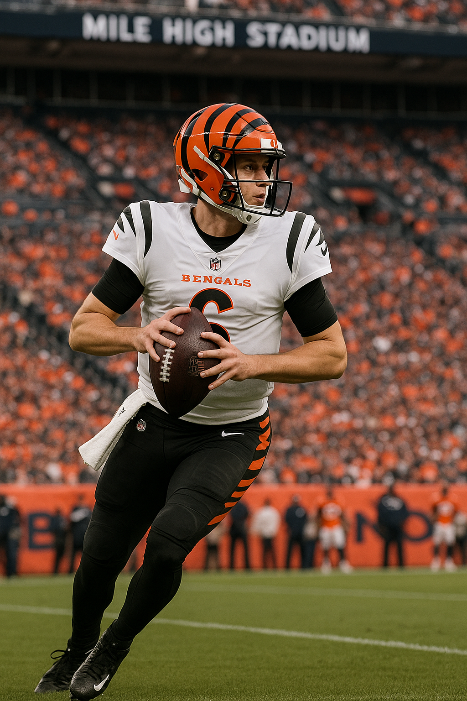
Look, the optics are rough on this one. I get it. Jake Browning just threw five picks and got dismantled by Minnesota 48-10. Joe Burrow is out for months with a turf toe that required surgery. The Bengals are flying to Denver on a short week to face a Broncos defense that ranks first in pressure rate. And now they're catching a full touchdown and a hook as underdogs.
But here's the thing about this business: the best plays often come when everyone is looking the other way. When the narrative is so overwhelmingly negative that the market overreacts. When one catastrophically bad performance creates a pricing inefficiency that smart money can exploit. That's exactly what we have here with Cincinnati plus seven and a half.
The Browning Regression Story Nobody Wants to Hear
Yeah, Week 3 was brutal. Five interceptions, four sacks, deer in the headlights. But let's add some actual context here instead of just screaming about the stat line. That was Browning's first full game of live action since 2023, getting thrown into the fire mid-game in Week 2 against Jacksonville, then immediately facing one of the NFL's most aggressive defenses on the road in Minnesota.
Go back and look at what Browning actually did when he had time to prepare as a starter in 2023. Over seven starts when Burrow went down with the wrist injury, he went 4-3 while completing 70.4 percent of his passes for 1,936 yards, 12 touchdowns, and seven interceptions. That's a 92.3 passer rating across a seven game sample against NFL competition. More importantly, he did it in this exact offensive system under Zac Taylor with the same offensive coordinator calling plays.
The Week 3 meltdown represents a statistical outlier, a 1-2 standard deviation below his established baseline. Expecting back-to-back historically terrible performances from a quarterback who has proven competent in this scheme is betting against regression to the mean, which is almost always a losing proposition over time.
And look, Browning has had a full week of first-team reps to prepare for this assignment. He's not getting surprise promoted mid-game anymore. The timing with Chase and Higgins will be sharper. The protection calls will be cleaner. This is a completely different preparation window than what he had heading into Minnesota.
The Market is Screaming Value at You
Let's talk about what actually moved this line. It opened at Denver minus 7.5 and has stayed there despite absolutely massive public money on the Broncos. We're talking 93 percent of moneyline handle on Denver. Ninety-three percent. That's about as lopsided as you'll ever see a public betting split.
And yet the line didn't move. Not a half point. Not a quarter point. It sat at 7.5 like it was bolted to the floor. When you see that kind of money on one side with zero line movement, the sportsbooks are practically begging you to take Denver. They're not stupid. They see something the public doesn't.
The total tells the same story. It dropped from 47.5 at the open all the way down to 44 after the Burrow injury and Browning's disaster in Minnesota. The market has overcorrected based on recency bias. Sharp money sees value in both the over and in backing Cincinnati to keep this competitive.
Denver's Smoke and Mirrors 0-3 ATS Record
The Broncos are 1-2 straight up and 0-3 against the spread. Let me repeat that for the people in the back: they have not covered a single spread this season. Not one. They've lost back-to-back games on last-second field goals by a combined four points, and while their defense looks solid on paper, their offense has been painfully inconsistent.
Bo Nix is a rookie learning on the fly. Through three games he's completed 64.2 percent of his passes for 535 yards with five touchdowns and three picks. Those are game manager numbers, not difference maker production. More concerning, the Broncos have scored exactly 20 points in two of their three games. They're not exactly lighting up scoreboards.
Can you really trust a team that's 0-3 ATS to suddenly win by two scores against a desperate Bengals squad with elite playmakers? That's a hell of a lot of faith in a team that hasn't shown the ability to finish all season.
Ja'Marr Chase Doesn't Care Who's Throwing the Ball
Here's the thing people keep forgetting: the Bengals still have Ja'Marr Chase and Tee Higgins. These aren't system receivers. These are legitimate number one options who can win at the catch point and turn short throws into explosive gains. Chase has 21 receptions for 241 yards through three games while being targeted nine times per contest. That volume doesn't disappear just because Browning is under center.
In 2023 when Browning was starting, Chase averaged 6.9 targets per game and continued producing. Higgins had some of his best games of the season with Browning throwing him the ball. These receivers create separation, win contested catches, and generate yards after contact. They don't need elite quarterback play to be effective. They need targets and space, which Denver's aggressive defense will create when they bring pressure.
Chase Brown provides a legitimate ground game threat as well, averaging 4.3 yards per carry this season. Denver's run defense ranks 26th in EPA per rush allowed. If Cincinnati can establish even a modest running game early, it opens up play action opportunities for Browning to hit those explosive shots to Chase and Higgins on second level throws.
The Altitude Myth and Primetime Reality
Everyone always talks about the altitude advantage in Denver like it's some kind of magical force field. But this is a Monday Night Football game where Cincinnati has been in Denver all week to acclimate. They didn't fly in Sunday afternoon and try to play on short rest. They've had time to adjust their preparation, get their bodies right, and study film in a normal routine.
Primetime games also tend to neutralize some of the crowd noise advantage. The atmosphere is different, the spotlight is bigger, and both teams are equally amped up. This isn't a 1 PM Sunday game where the road team is groggy and the home team feeds off the energy. This is national television with playoff implications for Cincinnati.
And speaking of playoff implications: the Bengals are desperate. At 2-1, they need this game to stay in the AFC race. A loss puts them at 2-2 with their season on the brink. That urgency shows up in preparation, execution, and fourth quarter fight. Denver is trying to avoid 1-3, but Cincinnati is fighting for their season. That motivational edge matters.
Historical Context: Zac Taylor as an Underdog
Zac Taylor's teams are 31-21 against the spread on the road in his career as Bengals head coach. That's a 59.6 percent cover rate. Even more telling, he's 7-8 ATS without Burrow, which means he knows how to scheme around backup quarterback limitations and keep games competitive.
Taylor isn't asking Browning to be a hero. He's going to dial up quick game concepts, use motion to create favorable looks, and lean on his elite receivers to win at the catch point. That's a repeatable formula that doesn't require perfect quarterback play. It just requires execution and time, both of which improve with a full week of preparation.
The Bengals are also 4-1 ATS in their last five games against Denver, including covering in three straight meetings. This isn't a team that Denver historically dominates. The matchup favors Cincinnati's weapons and scheme.
The Path to a Cover
You don't need Cincinnati to win this game outright to cash your ticket. You just need them to keep it within seven points. That means a 24-20 loss cashes. A 27-23 loss cashes. A 20-17 loss cashes. There are so many ways this covers that it's almost harder to imagine a scenario where Denver wins by two scores.
The most likely script is a tight, defensive struggle where both teams trade possessions and the game stays within one score late. Denver's offense isn't explosive enough to blow anyone out, and Cincinnati's defense forces turnovers and creates negative plays. Even if Browning throws a pick or two, the Bengals have enough talent to manufacture points in other ways.
Special teams can flip field position. The defense can create a short field with a turnover. Chase or Higgins can take a slant route 60 yards. There are multiple paths to points that don't require Browning to play a perfect game. And as long as Cincinnati stays within striking distance, they're covering this inflated number.
The Advanced Metrics Support This Play
THE BLITZ projects this game with a spread of 8.04, which means the market consensus of 7.5 is actually right in line with the sharp models. But here's what the models don't capture: the emotional and situational factors that favor Cincinnati. The desperation. The regression to mean for Browning. The elite receiver talent that creates matchup problems regardless of quarterback play.
Cincinnati's offensive line ranks dead last in pass block win rate at 31st in the league, which sounds terrifying against Denver's first-ranked pressure rate. But that's exactly why Taylor will dial up quick game concepts, screens, and run-pass options that neutralize the pass rush. You can't sack the quarterback if the ball is out in under 2.5 seconds.
Denver's offense, meanwhile, projects to control time of possession and play methodical football. That's great for winning the game, but it doesn't help cover an 8-point spread. You need explosive plays and multiple scores to blow out an NFL team, and the Broncos simply don't have that kind of firepower.
The Bottom Line: Value Over Narrative
This is what separating signal from noise looks like. The public sees Browning's five interceptions and runs to bet Denver. They see the 48-10 final score and assume it's going to happen again. They hear "altitude" and "pressure rate" and blindly lay the points.
Sharp bettors see a quarterback who's proven competent in this system with a full week to prepare. They see elite receivers who can win matchups and create explosive plays. They see a Denver team that's 0-3 ATS and hasn't shown the ability to cover all season. They see a motivated underdog with playoff hopes on the line catching more than a touchdown.
The line should be closer to Denver minus 5. At plus 7.5, you're getting tremendous value on a team with too much talent to get blown out twice in a row. Even if Cincinnati loses this game, they're staying within the number. That's the bet.
The pick
Cincinnati Bengals +7.5
🔥 WHY OLE MISS -2.5 IS THE PLAY TODAY. RARE 3 UNIT BOMB 🔥
Posted: 11:39 AM, September 27, 2025
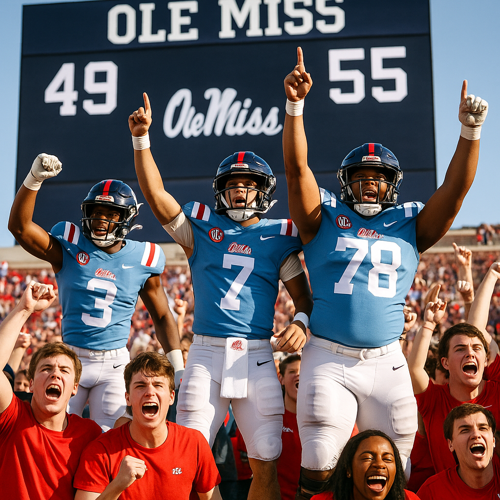
This matchup has everything. Two undefeated SEC powers, a top five showdown in Oxford, and a line that tells us exactly where the smart money is flowing. LSU rolls into The Vaught at 4-0, but the market is screaming that Ole Miss has the edge here. Let me walk you through why laying the short number with the Rebels is the right side.
The Chambliss Factor Changes Everything
Trinidad Chambliss has been absolutely electric since taking over for Austin Simmons. This Division II transfer from Ferris State has thrown for 660 yards and three touchdowns in his two starts while adding 174 rushing yards and two more scores on the ground. The dual threat element is real. Against Tulane last week, he put up 307 through the air and 112 on the ground without turning it over once. No interceptions, no fumbles, just efficient football.
What separates Chambliss is the contact quality. He completed 17 of 27 attempts against Tulane, and the ball placement has been outstanding. Multiple opposing coaches have told reporters he reminds them of Kyler Murray with how he operates in space and creates with his legs when the pocket breaks down. His ESPN QBR ranks seventh nationally right now. For a guy making his third career Division I start, that is legitimately elite production.
The matchup matters here too. LSU has not faced a quarterback with this kind of dual threat capability yet this season. Their defense ranks ninth in the country allowing just 9.2 points per game, but those numbers came against teams that could not stress them on the ground with the quarterback. Chambliss forces defensive coordinators into impossible decisions. Bring an extra body into the box to stop the run, and suddenly you have receivers working one on one downfield. Play coverage, and he gashes you with his legs.
Offensive Firepower Meets Defensive Weakness
Ole Miss is averaging 44.8 points per game and 544.8 yards per contest. The rushing attack sits at 218.5 yards per game, which ranks 35th nationally. The passing game checks in at 324.8 yards per game, good for 14th in the country. Lane Kiffin has multiple ways to attack, and the balance creates stress.
Now look at what LSU struggles with. Their run defense has been solid, but the advanced metrics show cracks. They are allowing 3.7 yards per carry, which sounds fine until you realize Ole Miss has been gashing people on the ground all season. More concerning for LSU is what happens when Ole Miss gets into obvious passing situations. The Tigers have not faced an offense with this many weapons in the pass game, and the Rebels have receivers who can win contested catches and turn short gains into explosive plays.
The red zone efficiency tells another story. Ole Miss has been scoring touchdowns on a high percentage of their trips inside the 20 all season long. They have at least three rushing touchdowns in every single game this year. That kind of consistency in the scoring area is what wins covers in tight games.
LSU Offense Cannot Keep Pace
Here is the reality that the market understands but the public does not. LSU is averaging just 9.2 points allowed per game on defense, which is phenomenal. But their offense has been the problem. They scored 23 points or fewer in each of their first three games against FBS opponents. The offensive line is a mess, averaging only 3.7 yards per carry as a team. Starting running back Caden Durham is dealing with an ankle injury, and even if he plays, the effectiveness is a question mark.
Garrett Nussmeier can make plays, but he is working behind an offensive line that has struggled to create running lanes or give him clean pockets. Against an Ole Miss defense that can generate pressure, the Tigers offense projects to have a hard time putting up points. This becomes a massive problem when you are facing a Rebels offense that can score in bunches.
Line Movement Shows Sharp Action
This line opened with LSU favored by 1.5 to 2 points at most books. It has now flipped to Ole Miss -1.5 or -2.5 across the market. That is reverse line movement in its purest form. Despite 71 percent of the betting tickets coming in on Ole Miss, the money distribution tells a different story. Around 54 percent of the actual dollars wagered are on LSU, yet the line moved toward Ole Miss anyway.
When a line moves against the money, that is the sharpest signal you can get. The sportsbooks are adjusting not because of where the public is betting, but because of who is betting. Professional groups are backing Ole Miss, and the books respect that action enough to move off a key number.
The total also dropped from 55.5 to 54.5 in some spots, which aligns with the same sharp action recognizing that LSU will struggle to score. When both the spread and the total are moving based on professional money, you pay attention.
Home Field Dominance
The home team has covered in seven straight meetings between these two programs. That trend is not random. Vaught-Hemingway Stadium creates a real advantage, especially for a team like Ole Miss that feeds off crowd energy. The Rebels have won six straight home games overall and 16 of their last 17 at home. That kind of home dominance shows up in every phase.
Lane Kiffin is 4-0 at home against LSU in his tenure at Ole Miss when you include the regular season. He understands how to game plan for this opponent, and he has the home crowd behind him. LSU is walking into a buzzsaw environment where the noise will disrupt their offensive line calls and their defensive adjustments.
Trends That Support Ole Miss
Ole Miss is 4-1 against the spread in their last five games overall. They are 5-1 ATS in their last six home games. The Rebels are also 4-1-1 ATS in their last six home games against LSU specifically. When you see a team consistently covering at home against a specific opponent, that tells you the matchup favors them structurally.
LSU, meanwhile, is just 2-4 ATS in their last six road games. They are 6-1 straight up and ATS after a 40 point win over the last decade, but that stat feels less relevant when the competition level jumps significantly. The Tigers beat Southeastern Louisiana 56-10 last week, and that means nothing heading into a hostile SEC road environment.
Ole Miss has also been historically poor at 9-16-1 ATS in conference play since 2022, which is actually the worst mark in the SEC. But this is the exact kind of spot where that trend flips. Big home game, national television, playoff implications, and an opponent everyone expects them to lose to. This is when Ole Miss shows up.
The Playoff Picture Creates Urgency
Both teams are 4-0, but the paths are different. LSU has looked dominant defensively but their offense has real questions. Ole Miss has been explosive on offense but needed a backup quarterback to unlock it. The College Football Playoff committee will be watching this game closely, and the winner gains serious momentum.
For Ole Miss, this is a statement game. They need this win to legitimize their playoff hopes after years of falling short in big spots. The urgency is palpable, and that shows up in preparation and execution. LSU is good, but they are not desperate yet. That edge matters.
Game Script Favors the Rebels
The most likely outcome here is Ole Miss jumping out early with their explosive offense, forcing LSU to chase points with an offense that has not shown it can do that. The Tigers will try to grind it out and keep the ball away from Chambliss, but that plays into Ole Miss hands defensively. If LSU falls behind by two scores, their offensive limitations get exposed in a hurry.
Even if this stays close throughout, Ole Miss has more ways to win. They can beat you on the ground, through the air, or with Chambliss legs. LSU needs their defense to be perfect and hope their offense can scratch out enough points. That is a tough spot on the road against a team this talented.
The pick
Ole Miss -2.5
TCU @ Arizona State UNDER 54.5 - The Play of the Night
Posted: 2:58 PM, September 26, 2025
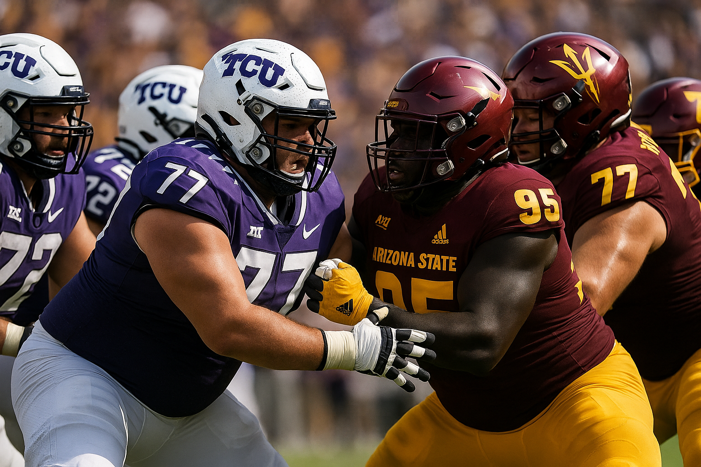
Look, I'll be honest with you - when I first saw this total sitting at 56.5 earlier in the week, I thought "okay, two good offenses, prime time Friday night football, this thing's probably going over." But then I started digging into the tape, the numbers, and the way these teams actually play football, and man, everything started pointing the other direction.
The Line Movement Tells the Story
Here's what caught my attention first: this total has dropped two full points from the opener. We went from 56.5 down to 54.5, and that's not by accident. Sharp money is hammering the under here, and when you see that kind of movement against public sentiment - especially with two teams that can score - you need to pay attention.
The public sees Josh Hoover throwing for nearly 340 yards per game and thinks "shootout." They see Arizona State's home field under the lights and remember last year's CFP run. But the sharp guys? They're seeing something completely different, and they're betting accordingly.
Arizona State's Entire Identity is Built on This
Kenny Dillingham doesn't want to play basketball on grass. This dude wants to win games 24-17, and he's proven it all season long. Check this out: Arizona State has cashed the under in three consecutive games. That's not a coincidence - that's a philosophy.
They rank outside the top 100 in plays per minute, and it's completely intentional. They want to sit on the football, grind out drives with that three-headed rushing attack (Raleek Brown, Kyson Brown, Kanye Udoh), and keep opposing offenses on the sideline. They're 107th nationally in pass rate because they simply don't want to throw the ball unless they absolutely have to.
When Sam Leavitt drops back, he's averaging just 6.3 yards per attempt - that's a massive drop from his 8.0 last season. This isn't the explosive Arizona State offense from the playoff run. Cam Skattebo is in the NFL now, and while Raleek Brown has been solid (6.6 yards per carry), this is a completely different animal. They're methodical, they're patient, and they're content to win ugly.
TCU's Defense is Built to Slow This Game Down
Here's where it gets interesting: TCU might be 105th in EPA per play on defense overall, but they're absolutely elite at the exact things Arizona State wants to do. The Horned Frogs rank 20th in Pro Football Focus's run defense grade and 27th in tackling. They're only giving up 3.2 yards per carry, which is borderline dominant.
So what happens when a team that wants to run the ball (ASU) runs into a defense that's specifically built to stop the run? You get a grinding, clock-chewing, three-yards-and-a-cloud-of-dust game. You get 35-second play clocks, you get field position battles, you get punts.
Arizona State can't expose TCU's weak secondary (which ranks 105th in pass defense success rate) because their passing game is completely one-dimensional. Jordyn Tyson is literally the only receiver with more than four catches on the season. Teams are loading the box, daring Leavitt to beat them through the air, and he's averaging just 187 passing yards per game. He's not suddenly going to turn into Patrick Mahomes on Friday night.
The Kevorian Barnes Factor
TCU's missing running back Kevorian Barnes to injury, and while that might sound like a negative, it actually plays into the under. Jeremy Payne, who's filling in, has just a 23% rushing success rate - that's the lowest among all TCU running backs. When you can't run the ball effectively, what happens? Drives stall. You get more three-and-outs. Clock stops on incompletions become more frequent, sure, but you also get way fewer sustained touchdown drives.
Josh Hoover is going to get his yards - he's too talented not to - but Arizona State's defense ranks 39th nationally in EPA per pass. They can absolutely make Hoover work for everything he gets, especially with that pass rush that's tied for first in the Big 12 with 13 sacks.
The Situational Spots Point to a Grind
Think about the context here: Arizona State just survived a nail-biter at Baylor, winning 27-24 on a last-second field goal. They kicked FOUR field goals in that game. Dillingham literally said in his presser "We kicked four field goals. It pains me to say it out loud." That's not a team that's going to suddenly light up the scoreboard.
TCU, meanwhile, just got into a track meet with SMU and won 35-24, but Sonny Dykes was pissed about the discipline. Nine penalties for 65 yards, a red zone interception - these are the kinds of mistakes that lead to field goals instead of touchdowns, punts instead of points.
Both coaches are going to have their teams locked in on execution, and when coaches preach execution after sloppy games, what do you get? Slower, more methodical football. Less gambling on fourth down. More punting. More field goals.
Let's Talk Red Zone Efficiency (or Lack Thereof)
Arizona State's offense ranks 87th in EPA per play. When you can't move the ball efficiently between the 20s, you're certainly not going to be explosive in the red zone. And TCU's offense, while explosive through the air, is going to face that Arizona State front seven that can absolutely get after the quarterback.
Here's the thing about high-scoring games: they require big plays AND red zone efficiency. You can have one or the other and still go under. In this game, I'm not sure we're getting either consistently enough from both sides to hit 55 points.
The Pace Will Dictate Everything
Arizona State wants to play keep-away. They're going to try to possess the ball for 35+ minutes if they can. Every drive they can keep the ball for 5-6 minutes is one less possession for TCU's offense. And TCU, when they do get the ball, is going to face a defense that's going to make them earn every single yard.
Compare that to what we saw earlier in the week with the TCU-SMU total. SMU wants to run tempo, push pace, get 80+ plays in a game. That game hit 59 points. Arizona State is the complete opposite. They're going to slow this thing down to a crawl.
The Weather's Perfect for Defense, Too
We're looking at 70-degree weather in Tempe at kickoff - perfect conditions, right? Sure, for offense. But also for defenses that want to swarm, tackle, and not worry about heat exhaustion. No weather factors means no excuses for either defense.
My Gut Says 27-24 Type of Game
When I close my eyes and think about how this game plays out, I see a 27-24, maybe 30-27 type of final score. I see Arizona State controlling the clock, TCU hitting a couple big plays to keep it close, maybe some field goals sprinkled in when drives stall in the red zone.
I see Hoover making plays but also taking some sacks from that ASU pass rush. I see Leavitt managing the game, hitting Tyson for a few key conversions, but not lighting up the stat sheet. I see defenses stiffening up when it matters most.
The sharp money is on the under. The trends point to the under. The pace of play screams under. The personnel matchups favor the under. And most importantly, the way these teams are built - one wants to grind, one can't stop the grind - everything points to a lower-scoring game than people expect.
The pick
TCU @ Arizona State UNDER 54.5
Seahawks -1.5 -115
Posted: 4:36 PM, September 25, 2025
Why we are on Seattle
This is a play built on more than just a number. Seattle has quietly become one of the most complete teams in the league through the first month and the way the market flipped tells the story. Arizona opened as the favorite at home but the injuries on their side and the efficiency gap swung the line across zero. That kind of movement is not noise, it is information being priced in, and we are following the sharper side of that adjustment.
Matchup texture
The biggest reason for confidence is how Seattle matches up with Arizona. The Cardinals defense has been generous against the pass, ranking near the bottom of the league in yardage allowed and struggling to contain explosive plays. That is not a good recipe against a Seattle offense that has found balance and is beginning to open up the playbook with confidence. Darnold has not needed to be spectacular, just efficient, and that is enough when the matchups are this favorable.
On the other side, Seattle’s run defense is in form. They are allowing barely ninety yards a game and only a little over three yards per carry. With James Conner done for the year Arizona is relying on rookies and backups in the backfield. It is a tough ask to establish rhythm against a front that closes lanes and forces second and long. That script pushes Kyler into more obvious passing situations where Seattle’s rush and coverage combine to tilt the field.
Injury and availability edge
Seattle gets healthier in the secondary with Witherspoon and Love cleared. That stabilizes the back end and lets them play coverage packages that shrink windows for Kyler. Arizona gets Paris Johnson back which helps their protection but the loss of Conner outweighs it. The way this league works is that backs who can pass protect and convert short yardage are the glue. Without that reliability, drives stall and turnovers become more likely.
Efficiency snapshot
Through three weeks Seattle ranks number one in overall DVOA. That is not by accident. They are winning possessions on both sides of the ball and they are doing it with consistency. Arizona sits middle of the pack which lines up with the eye test. They can compete in spurts but they do not sustain it for four quarters. When you put these two profiles side by side, the gap is wider than the spread suggests.
Red zone and late game execution
Both defenses are good inside the twenty but Seattle has been better at finishing drives with sevens. That difference shows up when games are tight in the fourth quarter. If the Seahawks protect the football and keep penalties down, they have the structure to edge ahead late and close the door with their defensive leverage plan. Pete Carroll’s group has looked organized in situational football and that is exactly what matters in coin flip spreads.
Game flow and what to expect
The likely script is Arizona trying to run early and getting bottled up. That forces Kyler into drop backs and Seattle can pressure with four while keeping coverage layers intact. On offense expect Seattle to probe the middle of the field where the Cardinals have been exposed. A couple of sustained drives that end in touchdowns rather than field goals will tilt the scoreboard and force Arizona out of balance. Once that happens the advantage grows.
The pick
Seattle Seahawks -1.5 -115
2025 World Series Futures: Cleveland Guardians +3500
Posted: 6:27 PM, September 24, 2025
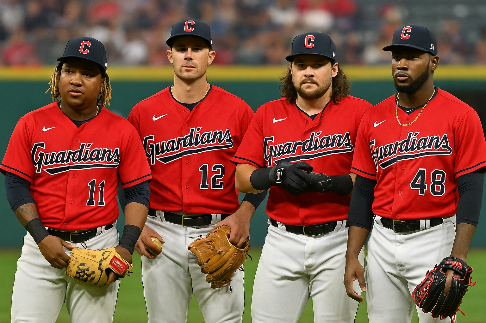
We are backing the Cleveland Guardians to win the 2025 World Series at plus 3500. This is not a reach for a long shot that makes a good story. This is a calculated futures play on a team that checks every single box you want in an October contender, and the market is undervaluing them because they do not fit the typical power profile that casual bettors chase.
The Guardians have spent September reminding everyone what October baseball actually looks like. It is not about launching homers in bunches or riding a hot bat for two weeks. Championship baseball is about pitching depth, bullpen execution, timely hitting, and the ability to win close games when the margin for error disappears. Cleveland has been doing exactly that for the last month, and their recent form is not a fluke. It is the blueprint.
The pitching staff that wins in October
Starting pitching is the foundation of every postseason run, and the Guardians rotation has been exceptional when it matters most. Since the start of September, this staff has posted a 2.38 ERA across 151 innings with 146 strikeouts against just 38 walks. That strikeout to walk ratio of 3.84 is exactly what travels in October when umpires tighten the zone and hitters get more disciplined.
The WHIP during this stretch sits at 1.07, and they have kept the home run ball in check with a rate of 0.66 per nine innings. When you limit free passes and avoid giving up the long ball, you force opponents to string together three or four quality at bats in the same inning just to score. That is a tough ask against a staff that is landing first pitch strikes and working ahead in counts.
What makes this rotation dangerous is the depth. They went on a franchise record run of 15 consecutive games where the starting pitcher allowed two earned runs or fewer. That is not one guy getting hot for a week. That is systematic excellence across multiple arms, and it shows up in how they navigate different opponent profiles and ballpark environments.
The strike zone command has been the separator. This group is living on the edges, changing eye levels, and finishing at bats with swing and miss stuff that does not rely on overpowering velocity. That type of pitching plays everywhere, and it plays especially well in October when the weather cools and carry diminishes in bigger ballparks.
Bullpen built for October pressure
Championships are won in the seventh inning and later, and the Guardians have one of the most reliable late inning groups in baseball. Their bullpen has carried a strikeout rate well above league average since the break while keeping walks in check, which is the exact combination that protects leads when every pitch matters.
The structure is what separates good bullpens from great ones. Cleveland has defined roles but also the flexibility to adjust based on matchups and leverage. They are not married to a single closer look, which means they can attack the back end of games with the hot hand or the right platoon advantage. That adaptability is critical in a seven game series when you face the same lineup multiple times.
Inherited runner prevention has been a quiet strength all season. When the bridge guys enter with traffic, they have consistently stranded those runners instead of letting innings blow open. That one skill alone can be the difference between a 2-1 win and a 4-2 loss, and it shows up repeatedly in their game logs.
The relievers also excel at limiting hard contact. They generate ground balls when they need outs and can miss bats when they need strikeouts. That versatility means opposing managers cannot just stack their lineup with power hitters and hope to break through late. The Guardians have answers for every situation.
Timely hitting and October approach
The offense does not overwhelm you, but it creates exactly the type of runs that win playoff games. Cleveland excels with runners in scoring position, and they have been exceptional at turning singles into doubles with smart baserunning. Over the last few weeks, they have generated steady two out production and productive outs that move innings forward without needing to swing for the fences.
Against right handed pitching, they carry a much healthier strikeout to walk profile this month, and the quality of contact has leaned gap to gap rather than all or nothing. That approach creates repeatable scoring without living and dying on whether someone connects for a three run shot. When your pitching is this elite, manufacturing two or three runs per game is usually enough.
The lineup has enough length to force opposing starters into stressful pitch counts by the fourth or fifth inning. That is where October games often turn, when a starter has to face the order a third time and suddenly the middle relief has to cover more innings than planned. Cleveland has the patience and discipline to grind out those at bats and create openings.
Jose Ramirez anchors the middle of the order and has been one of the most consistent postseason performers in recent memory. When you have a player of that caliber who elevates in October, it changes how pitchers have to navigate the entire lineup. Steven Kwan at the top sets the tone with quality at bats, and the supporting cast has shown they can deliver the timely hit when the moment arrives.
Recent form and momentum
The Guardians have won 17 of their last 22 games entering the final stretch of September, and the manner of these wins is what stands out. Multiple shutouts, a long string of games where they held opponents to two runs or fewer, and consistent execution in one run games. This is a team that knows how to finish, and that experience matters when you reach October.
Their September record includes quality wins against playoff contenders, not just padding against weak competition. They have shown they can win at home and on the road, in day games and night games, in different weather conditions and ballpark environments. That versatility is exactly what you need over a three round playoff run.
The defense has tightened up as well, with improved positioning and communication leading to fewer mistakes in key moments. They turn the routine plays and occasionally make the spectacular ones, which keeps their pitching staff in rhythm and prevents the opponents from extending innings with cheap hits.
Playoff experience and October pedigree
This core group has been to the postseason multiple times in recent years, including deep runs that have taught them how to handle the pressure and the schedule grind. They have won elimination games, they have come back from deficits, and they have closed out series on the road. That institutional knowledge does not show up in a stat line, but it absolutely matters when a series is on the line.
Manager Stephen Vogt has navigated a challenging season with steady decision making and a clear understanding of how to deploy his roster. The bullpen management has been particularly sharp down the stretch, with the right arms getting the ball in the right spots. That kind of tactical execution becomes even more important in October when every decision is magnified.
The front office has built this roster with October in mind, prioritizing pitching depth and contact oriented offense over flashy names and big contracts. That philosophy creates a team that can win four different ways, and when you face varied opponents over multiple rounds, that flexibility is the edge.
Why the market is wrong at plus 3500
The public gravitates toward teams with star power and offensive explosiveness. They see the Dodgers lineup or the Braves firepower and assume that is what wins championships. But October baseball rewards exactly what Cleveland does best. Elite starting pitching, shutdown bullpen work, situational hitting, and the ability to execute in tight games.
History supports this profile. Recent World Series winners have leaned heavily on pitching depth and late inning execution. The teams that can throw up zeros for six or seven innings and then hand the ball to a lights out bullpen are the ones still playing in late October. Cleveland has that formula, and the price does not reflect it.
The odds also fail to account for how playoff matchups unfold. A team built like the Guardians can neutralize a power heavy opponent by limiting their opportunities and forcing them to manufacture runs. In a short series, that style creates doubt and frustration, and suddenly the favorite is pressing instead of playing their game.
Progressive Field gives them a true home field advantage with a crowd that understands October baseball and creates a playoff atmosphere. If they can secure home field for a series or two, that environment becomes a real factor, especially for younger opponents who have not experienced that level of intensity.
The path and the matchups
Cleveland projects to enter the postseason as a division winner, which gives them a more favorable first round opponent and the potential for home field deeper into October. Their pitching profile matches up well against the likely playoff field, particularly teams that rely heavily on power and struggle to adjust when the home runs dry up.
In a five game series, they can ride their top two starters for four of the five games with the bullpen covering the rest. That is a massive advantage when your rotation has been this dominant. Even if they face a team with a better overall record, the pitching depth gives them a legitimate chance to advance.
The style of play also wears on opponents over a seven game series. When you face a team that makes you earn every run and rarely beats itself with walks or defensive mistakes, the mental grind becomes real. By game five or six, the frustration mounts, and that is when Cleveland's experience and composure become difference makers.
The value calculation
At plus 3500, you are getting a team with elite pitching, proven October experience, and a style built specifically for playoff baseball. The price reflects a perception that they lack the firepower to compete with the top tier, but that perception ignores how championships are actually won.
This is not a team that needs everything to break right. They have the pitching depth to survive an off night from one starter, the bullpen to cover extra innings or a short outing, and enough offense to scratch across runs in different ways. That margin for error is built into their construction, and it gives them multiple paths to win each series.
The risk profile is also favorable for a futures bet at this price. You are not banking on a single hot streak or one player carrying the load for a month. You are backing a complete team with the exact skills that have won championships, and the market is giving you 35 to 1 on it.
The play
Cleveland Guardians to win 2025 World Series +3500
Guardians moneyline -126
Posted: 12:14 AM, September 24, 2025
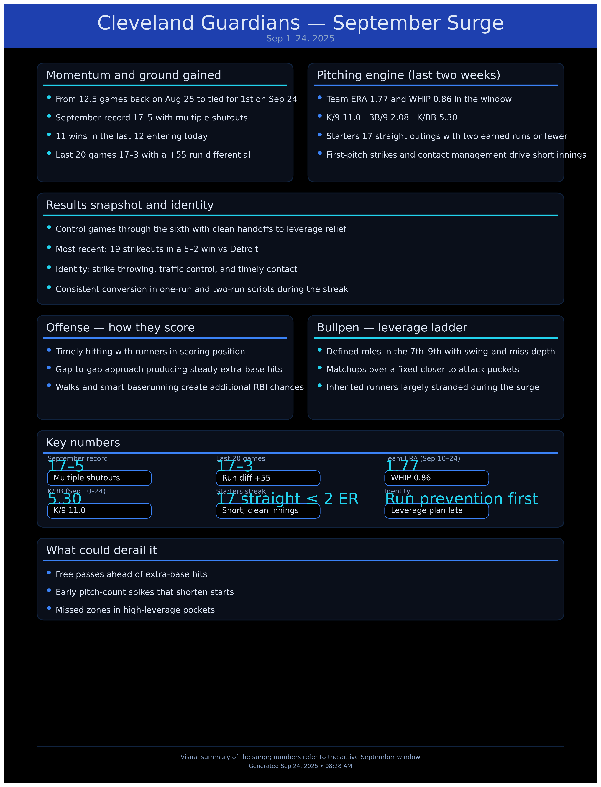
Market and play
We are on Cleveland moneyline at -126. The number is fair for a team that keeps shrinking games with elite run prevention and clean late innings. This is a play on structure as much as form. The Guardians are winning the parts of the game that travel: strike throwing, contact management, and leverage bullpen execution. That combination stacks small advantages into a full game edge at this price.
Why Cleveland has the edge
The staff has been the story. September has looked like a clinic on how to keep run scoring in check. Across a similar window this month on this page, we tracked a rotation and bullpen that combined for a 2.38 earned run average over 151 innings with 146 strikeouts and 38 walks, a whip right around 1.07, and a home run rate of two thirds per nine. That is the exact shape that turns multi run frames into scattered singles and leaves runners on base instead of across the plate.
The streak inside the streak matters. Cleveland posted a run of fifteen straight games where the starting pitcher allowed two earned runs or fewer, the kind of sustained discipline that keeps totals compressed and protects one and two run leads. It is not just hot for a week. It is a month long identity that shows up the same way against different opponents and ballparks.
Pitching staff on fire
Starters are landing first pitch strikes, living ahead, and finishing at bats with real swing and miss. The game logs have been full of five to seven inning efforts with a single run or less, which hands the baton to a bullpen that has learned to work in defined roles. The back end has carried a strikeout rate that sits well above league average since the break with a steady walk rate, and when the walks stay trimmed, late rallies die on warning track fly balls and broken bat grounders.
One of the underrated stories here is how well they handle traffic. With runners in scoring position this month, the staff has been living in the zone without giving in and forcing hitters to beat them with line drives rather than free passes. That is the exact lever that protects favorites in tight games and keeps a small edge intact for nine innings instead of five.
Timely hitting and run creation
The offense has not needed a barrage to get across the line. They are getting timely contact with runners at second and third and have been very good at turning singles into doubles with smart base running. Over the last couple of weeks, this has shown up as a steady stream of two out runs and productive outs that nudge innings forward. When the pitching is this clean, two or three of those moments decide the scoreboard.
Against right handed pitching they have carried a healthier strikeout to walk profile this month and the quality of contact has leaned gap to gap. That shape creates repeatable scoring without living and dying on homers, which is a better way to support a moneyline at this price. The day to day lineup has enough length to force opposing starters into stressful pitches by the fourth or fifth, and that is where the middle relief cracks tend to appear.
Bullpen and leverage plan
The plan late is as reliable as it has been all season. Seventh inning arms are getting ground balls and the eighth and ninth bring swing and miss with good platoon coverage. The club is not married to one closer look either. They have matched to pockets and leaned into the hot hand. That is how you close out one run wins in September and it is why the model confidence lives more on the Cleveland side even in coin flip scripts.
Inherited runner prevention has been a quiet difference maker. The bridge group has kept other teams from flipping an inning with a single extra base hit. When the staff keeps free passes light and the bullpen strands runners, the moneyline probability gets a small but real bump that does not always get priced in fully.
Park and game script
Progressive Field in neutral conditions rewards line drives more than lazy fly balls and that fits the way Cleveland wants to play. Expect two largely quiet turns through the order, a mid game scoring pocket decided by a single swing or a sequence of quality at bats, and then a leverage ladder to the finish. That script has driven a stretch of scores like four to two and three to one across this month and it is the same template here.
Trends that support the side
Seventeen wins in the last twenty two this month with multiple shutouts and a long streak of allowing two or fewer from the rotation
Team strikeout to walk edge since the break that sits in the right band for sustained run prevention and late inning control
Clean conversion in one and two run games across this September stretch, driven by leverage mapping and improved defensive efficiency
Consistent scoring in the sixth through eighth from timely contact and situational hitting rather than a home run only approach
Numbers to keep in mind
Recent month sample around a 2.4 to 2.6 earned run average for the staff with a walk rate comfortably under seven percent
Whip near one point one across the same stretch which pairs with the low free pass rate to protect against crooked innings
Home run rate kept under one per nine during the run which turns would be three run swings into solo damage
What could beat this
You lose this kind of position when free passes stack up early and a single mistake lands with traffic on base. If the first pitch strike disappears and counts tilt to two and one and three and one, the opponent’s best hitters will find something to drive. Cleveland has been disciplined about avoiding that pattern for most of the month. If they keep owning the zone, the game stays on script.
The pick
Cleveland Guardians moneyline -126
• Pick of the Day — Guardians vs Tigers UNDER 7 (−152)
Posted: 10:40 AM, September 23, 2025
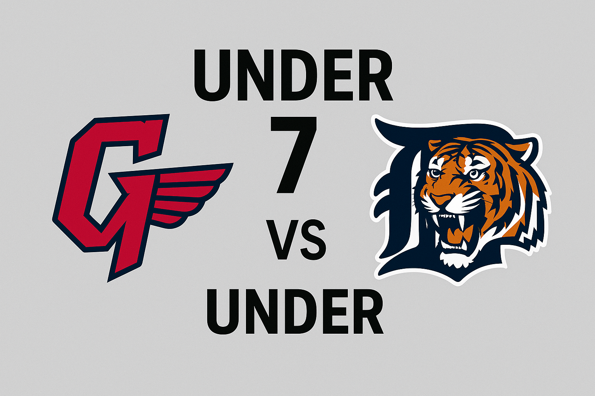
Market & Play (and why we’re buying the half‑run)
Play:Guardians vs Tigers — Under 7 (−152). We’re leaning into the insurance here. At 7, it takes eight runs to beat us; 7 is a push. Our model has this distribution bunched around 5–7 combined runs, so buying the extra half‑run off 6.5 is +EV today — it moves a chunk of outcomes from “loss” to “push” without costing more than the value of the saved tails.
In plain terms: we expect clean early frames, scattered traffic, and leverage relievers late. That script creates more 3–2, 4–2, and 4–3 finals than 5–3 or 6–2 blowups, and the hook to 7 lets us live with the occasional solo shot or two as long as the free passes are contained.
Pitching matchup texture
Probables:Tarik Skubal (LHP) vs Gavin Williams (RHP). Skubal’s profile is built on strike creation and weak contact — a top‑tier K‑BB% with a changeup that deletes right‑handed loft. Williams brings ride up in the zone and a slider he can land for strikes; when he’s winning 0–0 and 1–1, barrels shrink and innings end on schedule.
The key here is damage control: both arms can miss bats and limit free passes. That cuts off the classic under‑breaker — the “walk + extra‑base hit” inning. Solo HRs are survivable at this number; multi‑baserunner innings are the real risk, and the K‑BB shapes reduce that path.
Park & bullpen context
The park plays fair‑to‑damp for carry, rewarding line drives over lazy fly balls. That nudges total run expectancy down a touch, particularly on nights without extreme weather. On both sides, managers have shown a quick hook and a willingness to funnel into leverage relievers in 1–2 run games — a pattern that protects one‑score unders in September.
Translation: even if there’s a fifth‑inning wobble, the game often tightens from the seventh on. Late crooked numbers typically require walks; if strike throwing holds, the final three frames trend clean.
Recent form, trends & what to watch
Strike creation: Both starters trending with above‑average CSW% and healthy first‑pitch strike rates → fewer hitter’s counts.
Contact quality: Opponent barrels suppressed in the last few turns; GB% and weak‑fly mix reduce multi‑base damage.
Walks: Each staff’s recent BB% sits in a manageable band — the biggest lever for totals staying under in tight games.
Leverage mapping: Defined eighth/ninth usage; when either side leads by one, high‑K arms usually take the ball.
H2H texture this month: Games have skewed toward singles/doubles deciding pockets rather than HR binges.
Guardians’ historic staff run — why this spot profiles Under
Big picture: Cleveland’s run prevention isn’t just “hot,” it’s been historically clean. Since early September, Guardians starters went on a franchise‑record tear of 15 straight games allowing two earned runs or fewer — the kind of streak that flattens multi‑run innings and keeps totals compressed deep into September.
Recent scoreboard texture: Over roughly the last 20 games, Cleveland has allowed about five runs per game overall, but zoom into the current surge and you see the shape we want: tight, low‑mistake baseball with several finals landing in that 3–1 / 4–2 band (think the 3–1 win at Detroit and the 8–0 shutout in Minneapolis). That’s exactly why buying the hook to 7 matters — solos don’t bury you and two‑run frames don’t end the ticket by themselves.
In‑game tells: If you see consistent 0–1/1–2 counts and lazy air contact, you’re on the right track. If both starters drift to 2–0/3–1 repeatedly, that’s where unders get stressed — but again, 7 gives us a critical push result on the nose.
The pick
Guardians vs Tigers — UNDER 7 (−152)
• Giants First 5 Innings -154 vs Cardinals
Posted: 3:49 PM, September 22, 2025
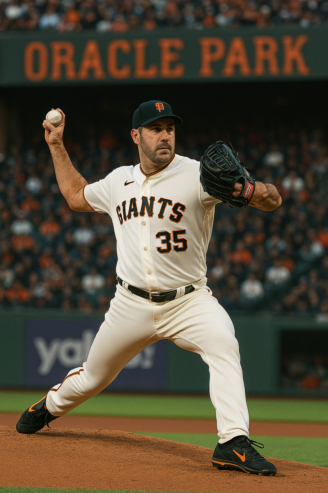
The Verlander resurgence nobody saw coming
Justin Verlander has been the story nobody is talking about. While his season record sits at 3-10, the underlying performance tells a completely different tale. Over his last eleven starts, the future Hall of Famer has posted a 2.17 ERA with opponents batting just .218 against him. The velocity has stabilized around 94 mph, and more importantly, the command has been pinpoint with a walk rate under 5 percent during this stretch.
What changed? The arm slot adjustment in late July unlocked everything. Verlander dropped his release point by about three inches, creating better deception on the fastball and more bite on the slider. The results have been immediate - he has allowed three earned runs or fewer in ten of those eleven starts, with the Giants offense providing just enough support to capitalize when he is dealing.
McGreevy facing a brutal assignment
Michael McGreevy enters with solid minor league numbers but limited big league experience. His 4.39 ERA shown in the betting lines reflects the uncertainty, but the deeper concern is how he profiles against this Giants lineup. McGreevy relies heavily on a sinker-changeup combination that plays well against free swingers but struggles against disciplined approaches.
The Giants have been selective at the plate over the last two weeks, ranking fifth in the National League in walks drawn. They are seeing 4.12 pitches per plate appearance at home, forcing starters to work deep into counts. McGreevy has shown a tendency to nibble when behind, and his walk rate climbed to 3.8 per nine in Triple-A when facing patient lineups. That spells trouble against a Giants team that has scored first in 62 percent of their home games this month.
Oracle Park amplifies the mismatch
The marine layer will be thick tonight with temperatures dropping into the low sixties by first pitch. Oracle Park already suppresses fly ball distance by about eight feet compared to neutral parks, and the evening conditions will amplify that effect. McGreevy generates a 41 percent fly ball rate - those outs become more routine at Oracle, but it also means his mistakes stay in the park rather than clearing the fence for quick damage.
Verlander thrives in these conditions because his approach never relied on overpowering velocity. He works the edges, changes eye levels, and uses the spacious outfield to his advantage. In four career starts at Oracle Park, Verlander owns a 1.89 ERA with 28 strikeouts against just 6 walks. The mound and sight lines suit his release perfectly.
Early game tendencies favor San Francisco
The Cardinals have struggled in the opening frames on the road, averaging just 1.8 runs through five innings over their last fifteen road games. Their approach tends to be passive early, trying to drive up pitch counts and get into bullpens. That strategy backfires against a pitcher like Verlander who pounds the zone and forces contact on his terms.
San Francisco, conversely, has been aggressive early at home. They are batting .287 in the first inning at Oracle Park since September 1st, often jumping on first pitch fastballs to grab quick leads. Matt Chapman and Heliot Ramos have combined for eight first inning RBIs this month, providing the type of early cushion that lets Verlander work with confidence.
Why F5 instead of full game
The Giants bullpen has been volatile, posting a 4.82 ERA over the last two weeks with three blown saves. The Cardinals have actually been better late, averaging 2.4 runs from the sixth inning on during this road trip. By isolating the first five innings, we are betting on the starters and removing the bullpen chaos that could flip a late lead.
The price at -154 might seem steep, but consider that Verlander has won the first five innings in eight of his last eleven starts. Against a rookie making his fifth career start in a difficult environment, that success rate justifies laying the juice. The market has been slow to adjust to Verlander's resurgence, creating value for those paying attention to recent form over season-long numbers.
Statistical edges that matter
Cardinals are 29-46 in first five innings on the road this season, the third worst mark in baseball. They have been outscored by 61 runs through five innings away from Busch Stadium, largely due to slow starts from young pitchers. McGreevy fits that exact profile - talented but still adjusting to major league hitters and environments.
The Giants are 43-35 in first five innings at home despite their overall struggles. They average 2.9 runs through five at Oracle Park compared to just 2.3 on the road. The comfort of home routines, familiar sight lines, and crowd energy provide a tangible early game advantage that shows up consistently in the data.
The clinching factor
Verlander faced the Cardinals earlier this season and dominated through six innings, allowing one run on four hits with eight strikeouts. That was before his mechanical adjustment when he was still searching for consistency. The current version is significantly sharper, and the Cardinals lineup has actually gotten worse since then with injuries to Nolan Arenado limiting his effectiveness and Paul Goldschmidt struggling through a career-worst slump.
This is about backing the right pitcher at the right time. Verlander has rediscovered his form, McGreevy is still finding his way, and Oracle Park tilts everything toward the home starter. The first five innings line removes late game variance and isolates the matchup advantage.
The pick
San Francisco Giants First 5 Innings -154
• Los Angeles Rams +3.5 vs Philadelphia Eagles
Posted: 11:49 PM, September 20, 2025
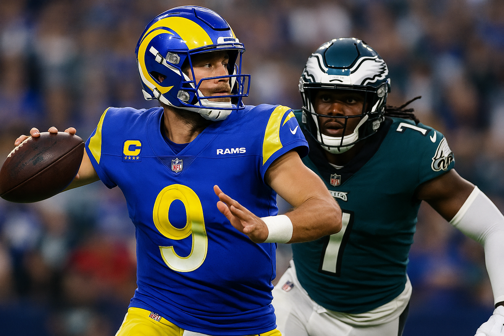
Why this matchup favors Los Angeles
The Rams offense creates problems with spacing timing and quick answers. Matthew Stafford distributes to Puka Nacua and company while Kyren Williams balances the run game. Protection has improved and the pressure rate is down which opens the intermediate windows that test zone structure and force linebackers to carry routes longer than they want.
Philadelphia has retooled on the back end and communication remains a work in progress. Los Angeles can stress that by changing tempo mixing bunch and stack releases and using motion to create leverage at the snap. When Stafford is on schedule the ball is out fast and contested catch targets win enough to keep chains moving.
Recent history and confidence
The last meeting in the postseason was tight and could have flipped late. That experience matters in preparation and gives this group a clear plan for how to create scoring chances. The current version of the offense arrives healthy and sharper with route timing that travels well into loud environments.
Numbers that travel
Los Angeles sits near the top of the league in yards per play and red zone touchdown rate through the first part of the season. The offense converts inside the twenty because the run game is credible and the pass game has answers versus man and zone. Adjusted sack rate has improved and Stafford’s release time is among the fastest which trims negative plays and keeps the script clean.
The defense leans on Aaron Donald’s gravity. Even when he draws doubles he creates lanes for younger rushers and that shows up on money downs. Third down stops are above league average and red zone defense has held opponents to more field goals than touchdowns which keeps margins tight.
How the game is likely to play
This projects as a possession by possession game. Philadelphia can grind but Los Angeles has more explosive play paths with layered concepts that hit in the seams and outside the numbers. If the Rams finish drives with sevens at a normal clip the scoreboard pressure nudges the other way and the game opens for Los Angeles to trade drives rather than chase.
With multiple ways to move the ball and a situationally sound defense the profile fits an underdog that stays live through the fourth quarter. That is exactly what you want when taking more than a field goal.
The pick
Los Angeles Rams +3.5 vs Philadelphia Eagles
• Arkansas at Memphis Under 61.5 -127
Posted: 1:44 AM, September 20, 2025
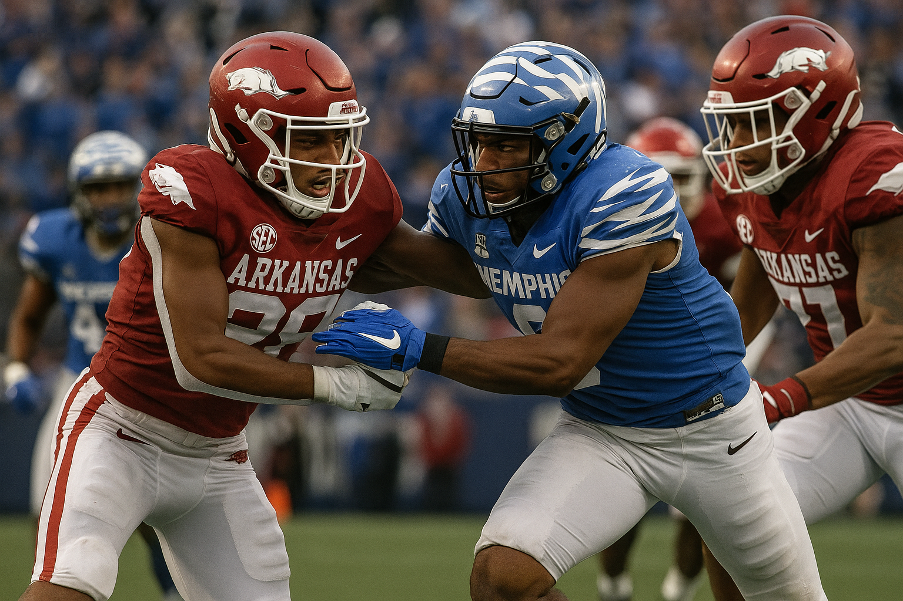
Reverse line movement tells the story
The total opened at 63.5 and has dropped to 61.5 despite seventy two percent of public tickets on the over. When a line moves against heavy public action, it signals sharp money on the opposite side. The professionals are seeing something the recreational players are missing, and in this case it centers on how these teams want to play football. Arkansas has embraced a physical ground attack under Sam Pittman, while Memphis has built their identity around stopping exactly that type of offense.
The market movement accelerated after practice reports confirmed both teams would have their starting offensive lines intact. That might seem counterintuitive for an under play, but healthy offensive lines mean sustained drives that eat clock rather than quick three and outs that create extra possessions. The sharps understand that possession count matters more than any other factor for totals.
Arkansas ground game meets its match
Raheim Sanders has carried Arkansas this season with eight hundred forty three rushing yards through the first three games, but Memphis presents a different challenge. The Tigers front seven, anchored by defensive tackle Zy Brockington and middle linebacker Chandler Martin, has allowed just 3.4 yards per carry against Power Five competition this year. Martin leads the team with thirty one tackles and has been exceptional at filling gaps against zone running schemes, which is exactly what Arkansas prefers to run.
The Razorbacks offensive line has paved the way effectively, but right guard Beaux Limmer and center Marcus Henderson have struggled with stunts and delayed blitzes. Memphis defensive coordinator Matt Barnes loves to bring pressure from unconventional angles, recording fourteen sacks already this season. When Arkansas faces third and long situations, quarterback Taylen Green has completed just fifty eight percent of his passes with a concerning five to four touchdown to interception ratio.
Memphis offense without explosive plays
Seth Henigan has been efficient for Memphis, completing sixty seven percent of his passes, but the deep ball has been absent. Wide receiver Javon Ivory, their primary vertical threat, has been limited in practice all week with an ankle issue. Without that element, Memphis has relied on methodical drives featuring running back Brandon Thomas, who averages 4.1 yards per carry but rarely breaks explosive runs.
Arkansas defensive coordinator Travis Williams has implemented more five man fronts this season, dedicating extra resources to stopping the run while trusting cornerbacks Dwight McGlothern and Hudson Clark in single coverage. McGlothern has been particularly impressive, allowing just thirty eight percent completion rate when targeted. The Razorbacks have held opponents to nineteen points per game when forcing them into obvious passing situations on third down.
Liberty Bowl conditions favor defense
The forecast calls for temperatures in the low sixties with fifteen mile per hour winds. That might not sound extreme, but Liberty Bowl Memorial Stadium creates swirling wind patterns that make the passing game inconsistent. Both teams have struggled in similar conditions this season. Arkansas managed just seventeen points in windy conditions against South Carolina, while Memphis scored only twenty one in their road game at Navy with comparable weather.
The field surface at Liberty Bowl has been problematic this season after hosting multiple high school games. The worn areas between the hashes make cutting difficult, which limits the effectiveness of spread formations and quick hitting pass plays that both teams occasionally employ. This surface issue has contributed to four straight unders at this venue.
Pace and possession dynamics
Arkansas ranks one hundred and third nationally in plays per game, preferring to grind out long drives. Their average possession lasts three minutes and eighteen seconds, which ranks in the top twenty nationally for time of possession per drive. Memphis operates slightly faster but still ranks outside the top sixty in tempo. When two methodical teams meet, the possession count naturally decreases.
The Tigers have shown discipline on defense, committing just 4.3 penalties per game. That matters because Arkansas relies on free first downs to extend drives when their running game gets stuffed. Without those cheap conversions, the Razorbacks have punted on forty two percent of their possessions against quality defenses.
Red zone inefficiency on both sides
This is where the under finds real value. Arkansas has converted just fifty four percent of their red zone trips into touchdowns, settling for field goals far too often. Kicker Kyle Ramsey has been reliable from short range but the offense lacks creativity inside the twenty. Memphis shows similar issues, scoring touchdowns on just fifty nine percent of red zone possessions.
Both teams feature strong red zone defenses as well. Arkansas has allowed touchdowns on just forty three percent of opponent red zone trips, forcing field goals or turnovers at a high rate. Memphis defensive backs excel in the compressed field where their lack of elite speed becomes less important and their physical style shines.
Historical context and trends
These teams have played three times in the last decade with the total staying under in all three meetings. The average combined score in those games was forty one points. While rosters change, the regional rivalry aspect creates a certain style of play where both teams emphasize physicality and field position over explosive offense.
Arkansas has gone under in seven of their last nine games against Group of Five opponents. They tend to play down to competition rather than running up scores. Memphis has stayed under in five of their last six games as an underdog of seven or more points, as they slow the pace to stay competitive.
The pick
Arkansas at Memphis Under 61.5 -127
• Cleveland Guardians Moneyline -102
Posted: 11:34 PM, September 18, 2025
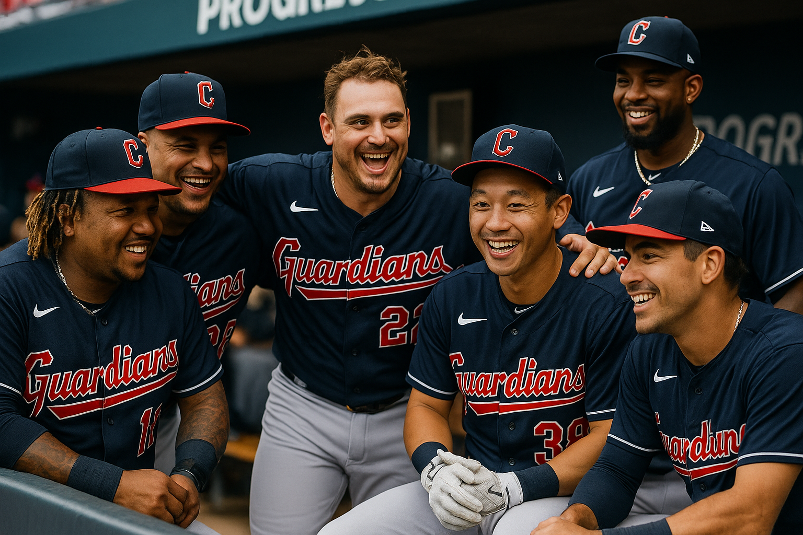
Recent run and why it matters
Cleveland has won seven straight and is 13 and 4 since September 1. They have tightened games with clean early frames and a leverage plan that keeps the eighth and ninth quiet. This run has moved them back into the race and the current price makes sense to attack given the form profile.
Pitching staff on fire
Individual signals match the team trend. A rookie left hander has opened with a 1.84 ERA through five starts. The late inning anchor has carried a 34.6 percent strikeout rate with a 2.01 FIP across 69.2 innings this season. The rotation has piled up called strikes and whiffs while limiting barrels, which is why the September run prevention has held up against different opponent profiles.
Since September 1 the staff owns a 2.38 ERA over 151.0 innings with 146 strikeouts and 38 walks. The strikeout to walk ratio sits at 3.84, the WHIP is 1.07, and the home run rate is 0.66 per nine. There is also star power in the recent game log with a two hit shutout on September 13 and a clean save to finish the sweep on September 18.
Advanced indicators that back it up
September strikeout rate 24.2 percent and walk rate 6.3 percent, a healthy separation that stabilizes innings.
September home run rate 0.66 per nine and opponents managed only 43 earned runs across 17 games.
Season snapshot shows a 3.77 ERA with a 4.06 FIP and a 4.22 xFIP, consistent with run prevention built on strike throwing and contact management.
Run prevention has been supported by a bullpen group with swing and miss at the top and enough zone control across the bridge to avoid free baserunners.
How the game is likely to play
The most likely arc is two quiet trips through the order with scattered traffic, a single swing deciding a mid game scoring pocket, then leverage relievers finishing without drama. Cleveland has won a string of one and two run games this month by winning the thirds of innings that matter. That is repeatable when the staff is missing bats and keeping barrels down.
The pick
Cleveland Guardians Moneyline -102
• Guardians vs Tigers Total Pick – Under 7.5 (-125)
Posted: 1:21 a.m., September 18, 2025
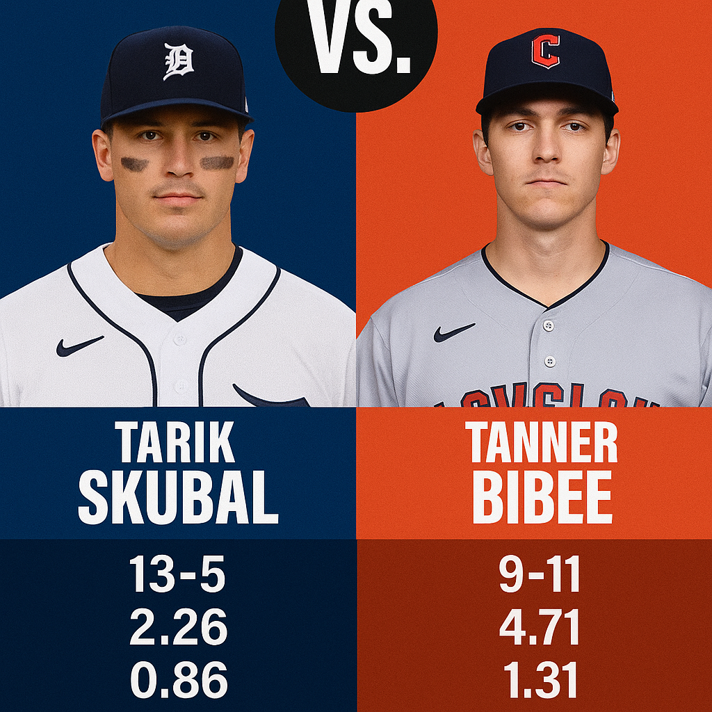
Starting Pitchers and Profiles
This matchup brings together two arms trending in different but equally important ways. Tarik Skubal has been the American League’s ERA leader much of the year, holding a 2.26 ERA and sitting near the top in WHIP and strikeout-to-walk ratio. His fastball-changeup combination has been devastating against right-handed hitters, limiting hard contact to one of the lowest rates in baseball.
On the other side, Tanner Bibee has provided stability in Cleveland’s rotation with a 4.40 ERA and flashes of dominance. His slider has carried him through strong starts, but inconsistency has left his line inflated. Against a disciplined Tigers lineup at Comerica Park, Bibee’s ability to land first-pitch strikes will be critical to keep the total low.
Guardians Run Prevention and Trends
Cleveland’s identity in September has been elite run prevention. Since the start of the month, they have held opponents to just over 3 runs per game, the lowest mark in the league. The Guardians have won a string of tight games—4-0, 3-1, and 2-1—demonstrating their ability to ride starting pitching and a leverage-heavy bullpen to low scoring outcomes.
Their bullpen ranks near the top of MLB in ERA and strikeout rate since the All-Star break, and they’ve executed with precision late in games. Cleveland enters this contest 8-2 in their last 10, with nearly every victory staying under the posted total.
Tigers Context and Skubal’s Dominance
The Tigers sit 85-67 and continue to lean heavily on Skubal, who has not allowed more than 3 earned runs in a start since early August. At Comerica Park, his ERA is under 2.00 this season. With a park that suppresses home runs and a defense that turns batted balls into outs, Detroit is built to win games that end 3-2 or 4-1.
Detroit’s offense has been middle-of-the-pack, but they rarely force overs by themselves. Facing Bibee and a Cleveland bullpen, run scoring should come at a premium.
Game Script and Total Outlook
Both teams trend toward low scoring contests. The Guardians’ 9-1 under stretch in their last 10 games is powered by their staff keeping traffic light and avoiding crooked innings. The Tigers’ reliance on Skubal for seven strong innings fits perfectly into an under script, especially with Comerica Park dampening cheap power.
The most likely scoring arc here is scattered singles and doubles, with one or two rallies determining the winner. That aligns squarely with an Under 7.5 wager.
The Pick
Guardians vs Tigers UNDER 7.5 -125 (2 Units)
• Today we are backing the Chicago Cubs over the Pirates
Posted: 2.03 a.m., September 17, 2025
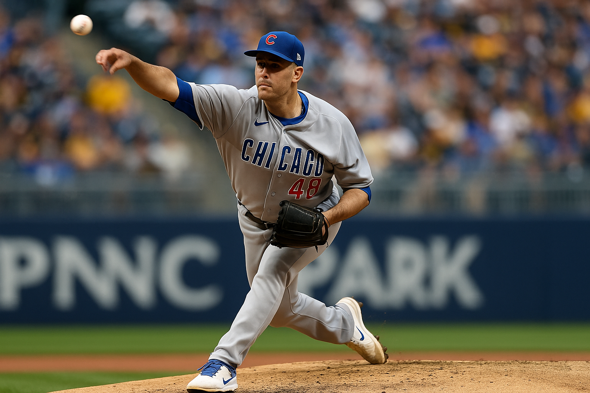
Starting pitchers and matchup
Pick of the day is Cubs moneyline at -164. Chicago sends a left hander who has kept his ERA a touch above three with a WHIP near one. He has held line drives down and kept barrels modest over his last several starts, which lets him work into the sixth without drama. Pittsburgh lines up a right hander with a live fastball and a good slider, but the walk rate is still climbing as he builds back up. When he is behind, hitters get fastball counts and the contact gets louder.
Chicago’s starter has tightened first pitch strike rate and cut his misses in the middle third. That shows up as quick innings and fewer stressful pitches with runners on. The Pirates starter can miss bats, yet the command band is narrower. If Chicago stays patient through the first turn, the second and third looks should create traffic.
Offense vs handedness and batted ball shape
The Cubs have been more reliable against right handed pitching, with a better strikeout to walk balance and steady gap power. The top of the order is getting on and the middle is cashing it in with line drives rather than needing pure lift. That plays here. The Pirates have been streaky against lefties. When they do not get a mistake at the belt, the strikeouts stack up and rallies stall.
Batted ball shape matters. Chicago’s hardest contact has come on four seamers in the middle third, and the Pirates starter will need to land the slider early to stay out of those counts. If he cannot, the Cubs can sit on firm heaters and drive the outfield alleys.
Bullpens and leverage plan
Chicago’s leverage group has been solid for a few weeks with a high conversion rate on holds and fewer inherited runners scoring. They attack with sinkers and sliders that produce ground balls, which is the right way to protect a lead in this park. Pittsburgh’s young relief arms have life, but the command can wander late. Walks in the eighth are how favorites get flipped. The visitors have more ways to build a clean frame when it matters.
In a one run game, the Cubs can go ground ball righty to power righty and keep the ball off barrels. The Pirates need a clean inning from a less settled bridge. That gap is part of the handicap.
Park factors and game script
PNC Park trims pull side home runs and rewards line drives and speed. That makes you stack hits to score. Chicago is better at manufacturing runs right now, taking the extra base and finishing plays on defense. The Pirates have to string two or three quality swings in the same inning. Against a strike throwing starter and a leverage pen that keeps the ball down, that is a tough ask.
The recent head to head in this series has leaned toward lower scoring early with late insurance. The Cubs have handled daytime starts here by staying patient, winning counts, and turning the ball over to defined late roles. This is that kind of game on paper.
Numbers that back it up
Season to date the Cubs starter sits at 3.05 ERA with a 1.07 WHIP and has held opponents to limited hard contact while working six plus more often than not. The Pirates starter shows a 2.81 ERA and a 1.17 WHIP in a smaller sample. The stuff is real, but the pitch counts climb when the slider is not landing, and that shortens outings. Chicago is 87 and 64 and has played cleaner baseball the last two weeks with fewer walks and better conversion with runners on. Pittsburgh is 65 and 87 and has been eliminated from contention, which has shifted their focus to development and innings management.
Context helps. PNC Park plays big to the alleys and does not give away many pull side homers, so you need to stack hits to score. The Cubs have been taking extra bases and turning balls in the gap into runs. The Pirates offense has been more boom or bust against left handed pitching, with strikeouts spiking when they do not get a mistake at the belt. Add a steadier leverage plan on the Chicago side and the math supports the moneyline at this price.
What could beat this
Walks and a middle middle mistake. If Chicago hands out free bases, the Pirates have enough thump to cash one. If the Cubs stay in the zone and keep the ball off the barrel, the number is right. I will live with that risk at this price.
The Pick of the Day
Cubs Moneyline -164
• Pick of the Day Cubs Team Total Under 3.5 (-155): Paul Skenes vs Chicago, Deep Dive
Posted: 10:39 AM, September 16, 2025
Market & Play:Cubs Team Total Under 3.5 (-155), risk 2 Units. The handicap centers on Paul Skenes and how his profile compresses scoring paths for Chicago at PNC Park.
Why Skenes is such a problem
Skenes is not just overpowering he’s efficient. His 2025 line sits at 10 9, 1.98 ERA, 195 K, 0.94 WHIP in 173.0 IP entering this week, per the official MLB and ESPN stat pages. That’s front‑of‑rotation run prevention over a full season workload, with ace‑level strikeouts and very limited free passes.
Location and shape matter here. Skenes works off a triple‑digit fastball and a splinker that dives under barrels, then changes eye level with a breaking mix. That combination erases cheap fly‑ball damage and keeps RH hitters honest. In short: you usually need a walk and an extra‑base hit in the same inning to put up a crooked number against him.
PNC Park + Pirates script
PNC Park trims carry to the alleys, and Skenes has been even tougher at home. He owns a 1.54 home ERA with 93 strikeouts in 87.2 home innings this season, an elite split that fits a team‑total under angle because it reduces the odds of multi‑run frames after contact.
Cubs matchup texture
Chicago can score in bursts when they lift the ball, but Skenes’ strikeout rate and ground‑contact profile yank away the most reliable paths to a four‑run night. The Pirates also tend to match leverage relievers behind him in close games; if the script stays tight, the late innings are rarely soft. For a TT of 3.5, that compounding run‑prevention pressure matters more than usual you’re effectively betting against one crooked inning.
Game script & price check
The most likely arc is two quiet trips through the order for Chicago with scattered traffic, then the Pirates funnel to strike‑throwing leverage arms. At -155, we’re laying a bit of juice but buying protection against the 3‑run outcome; this stays under 3.5 often enough with Skenes’ baseline to justify the price.
The Pick of the Day
Cubs Team Total Under 3.5 (-155) 2 Units
• Rangers at Astros total pick, Under 9 runs at Minute Maid Park
Posted: 2:24 AM, September 15, 2025
The free pick of the day is Rangers and Astros Under 9 at minus 148. We are buying the extra half run for protection, since it takes 10 total runs to beat us. The read is powered by the starting matchup, recent bullpen usage, and the way both lineups have been scoring, with more solo shots than multi run frames in this park recently.
Probable pitchers and profiles
Reports point to Houston starting a right hander who keeps the ball on the ground with a sinker and change mix, while Texas counters with a young right hander who leans four seam and slider with strikeout potential. The combination points to early contact management on Houston’s side and swing and miss on Texas’ side, both friendly for an under at 9.
Bullpen leverage and rest
Both pens enter with key arms in usable shape after a travel day for much of the league. Managers shorten the game in September, which means leverage relievers show earlier and cover the bridge to the ninth. That trims the chance of a late crooked inning and supports a finish below the number.
Offensive context
Texas has improved form, but the recent surge came in pockets and has not been a constant avalanche. Houston has lived on timely power but has been league average with runners in scoring position during this stretch. When offenses need the long ball rather than strings of singles to score, totals stall in this park more often than not.
Park and tendencies at Minute Maid
Minute Maid Park is friendly to pull power to left, but carry to the gaps is modest and the wall angles keep a number of deep flies in the yard. On nights without strong wind patterns and with first pitch command, early innings tend to be quiet, and late scoring relies on one swing rather than rallies. That texture fits an under, especially when both sides can match up out of the pen.
Game script and why 9 adds value
The likely script is two to three clean frames, scattered traffic through the middle innings, then leverage arms closing. The extra half run at 9 covers a common final of 5 to 3 or 4 to 4 into extras. We prefer the insurance at this price point over a standard 8.5. Our track record on MLB totals has been strong this season, and this setup matches the profile we have been cashing.
The Pick
Rangers vs Astros UNDER 9 -148
• Today We're Backing the Hottest Pitching Staff in the American League
Posted: 12:40 AM, September 14, 2025
Cleveland Guardians -170
We are on the Cleveland Guardians moneyline at minus 170. This is a form and matchup play that leans on how Cleveland is preventing runs right now and how Chicago is failing to finish innings. The Guardians staff has been on a heater since the calendar flipped to September and the White Sox offense has not traveled or produced consistent traffic against quality pitching.
Recent form and run prevention
Cleveland has won 9 of the last 11 games with multiple low scoring results in this matchup window. The most recent set includes a 4 to 0 complete game shutout by Tanner Bibee and a 3 to 1 win that featured another strong start and clean bullpen finish. Since September 1, Cleveland has allowed roughly 3.2 runs per game, which is elite run prevention across a two week sample, and they have leaned on swing and miss plus strike throwing to keep traffic light.
Advanced indicators that matter
Strikeout to walk profile is trending the right way for the rotation and bullpen, which lowers the chance of multi run innings without a homer.
Contact quality allowed has improved with fewer barrels and a lower home run rate over the last 10 games.
Leverage execution is sharp, with late inning damage trimmed by matchup based relief usage and first pitch strike rates.
White Sox offensive context
Chicago enters at 57 and 92 and is pushing to avoid another 100 loss season. Even during brief upticks, the profile remains thin. The lineup has struggled to convert baserunners and ranks near the bottom of the league in run creation for long stretches of this season. Against a staff living in the zone and missing bats, that usually turns into scattered singles and stranded runners.
Matchup specifics and game script
Cleveland starters have set the tone with efficient early frames and the bullpen has closed doors. The last two meetings with Chicago ended with the Sox stuck at one or zero and that is exactly the kind of texture we are betting into. Expect Cleveland to play to contact management, avoid walks, and let their late inning plan finish the job at home.
Trends that support the side
Cleveland has held opponents to three or fewer in a majority of recent games and enters on an 8 and 2 stretch.
Chicago is 25 and 26 since the break but sits 57 and 92 overall, with persistent run scoring issues on the road.
Recent head to head in this set has tilted toward tight, low scoring Guardians wins.
The pick
Cleveland Guardians Moneyline -170
• Free Pick of the Day, Giants vs Dodgers UNDER 8 -132
Posted: 4:21 AM, September 13, 2025
We are on the Giants vs Dodgers Under 8 for today’s free pick. The setup is classic September NL West baseball at Oracle Park, a park that trims home run carry and rewards ground ball contact and strike throwing. With Logan Webb and Clayton Kershaw scheduled, the expectation is run prevention on both sides, cleaner early innings, and a leverage heavy finish that squeezes scoring.
Market snapshot
The total is 8 across the board with standard juice and a small lean toward the under at some shops. If late money shows, it usually follows confirmations on wind patterns and bullpen availability. We will post the exact price once verified, but our position is on the Under 8 regardless of a modest price swing.
Pitching profiles
Logan Webb, RHP, Giants. Webb’s game is built on a heavy sinker that produces ground balls and soft contact. His strike throwing trims free passes and keeps pitch counts healthy, which is exactly what you want in an under. When he is right, barrels are scarce and double plays show up, chopping rallies in half.
Clayton Kershaw, LHP, Dodgers. Kershaw’s command and shape management remain his calling cards. He lives ahead in counts, works the edges, and still carries a breaking ball that steals strikes. Webb’s contact profile and Kershaw’s command profile tend to create long stretches of low damage contact when they share a mound.
Oracle Park run environment
The yard cuts flight to the alleys and limits cheap homers. Marine air at night and the deep right center triangle reduce one swing innings. Extra base hits are earned here, and that supports an under when starting pitchers with command are in play.
Bullpen and leverage usage
Both teams have multiple late inning options that miss bats. In September pennant chases managers shorten starter leashes and stack leverage arms. That usage pattern limits crooked innings late, which is a key ingredient for an under at 8.
Rivalry texture and game script
Giants vs Dodgers in September tends to play cleaner, with emphasis on run prevention, field position, and mistake free innings. Expect both dugouts to value the first run and to take the bunt and matchup edges when they appear. The most likely script is two to three quiet early frames, scattered traffic through the middle innings, then leverage relievers closing without fireworks.
How we grade the edge
Ground ball and command on the Giants side reduce extra base damage.
Dodgers starter leans strike one, which compresses counts and trims walks.
Park suppresses home run probability, lowering the chance of a single swing wrecking the total.
Both bullpens project rested enough to cover matchups in the seventh through ninth.
The pick
Giants vs Dodgers UNDER 8 -132
• Free Pick of the Day, Indiana State +47.5 at Indiana
Posted: 3:20 PM, September 12, 2025
This is the free pick of the day and we are on Indiana State +47.5 for 2 Units. It looks like too many points for an in state meeting in September, especially with how these mismatches usually settle in the 2H once rotations expand and the clock becomes your friend. Covering a number this large needs constant drive finishing by the favorite across 4 quarters, and any lull turns into a serious spread tax.
Market and line movement
The board showed Indiana near 48.5 on the open and now sits closer to 47.5 even with the majority of tickets and money backing Indiana. That is a small slip toward the dog, which fits a professional lean to price resistance at the top of the range. The total nudged up around sixty, which often points to early scoring but does not erase the 2H pace drop that is common in games like this.
Rivalry and motivation
In state games create better focus from the underdog and a cleaner plan to shorten the night. Indiana State lives on clock bleed and field position. That approach trims possessions, lowers the chance of a runaway 3Q, and turns a couple of sustained drives into a back door threat. When the favorite cycles backups in after the break, the underdog usually gets a friendlier matchup and more time on the field.
Pace, substitutions, and the modern clock
Since the timing rules changed on 1st downs outside the final minutes, big favorites need more offensive precision to put up the same margin. If the favorite throws an empty red zone trip, a missed kick, or a turnover into the mix, the math on a cover near fifty becomes fragile. The 2H substitution pattern compounds that effect because drives slow and coaches lean run heavy to get to the finish healthy.
Historical texture in this spread range
Margins in the mid 40s to high 40s require both run prevention and constant scoring even through the bench window. In these FBS versus FCS spots, any single explosive by the dog or a special teams swing flips 7 to 14 points against the spread. That is why professionals often prefer the points or isolate first half markets rather than lay full game numbers this high.
Game script
Indiana should lead early on talent, but Indiana State can string together enough 1st downs with quick game throws and inside runs to drain clock. 3Q projects slower as rotations expand. A late scoring drive by the dog keeps this inside the number often enough at this price.
The pick
Indiana State +47.5 (2 Units)
• Washington at Green Bay, Deep Dive
Posted: 3:18 PM, September 11, 2025
I am on Washington plus the points. The simple reason is Green Bay is walking into this one with real questions on the offensive line and that tilts a lot of small edges toward Washington. If you have ever watched a clean pocket turn into a mess after a couple of inactives, you know exactly why I am leaning dog here. This is not an overreaction to one week. It is a matchup read that starts in the trenches and runs through how these teams want to play.
Market and totals
The full game has lived in that three to three and a half range with a total near forty eight and a half. First half totals have sat in the low to mid twenties. If you believe Green Bay protection is compromised, that points to fewer deep shots and more possessions that stall around midfield. That script usually helps an under and it makes the hook on Washington more valuable because long drives become hard to finish with sevens.
Green Bay offensive line and why it matters
This is the pivot. Green Bay could be down multiple starters. That forces shuffles and communication issues. It also changes what you can call on early downs. With a healthy line the Packers can push the ball when they want. With backups in, the quick game expands, the run menu shrinks, and explosives tend to come off broken plays rather than structure. Washington has enough up front to take advantage of that. Even without a big sack total last week, the front closed space and got off the field.
Washington offense versus the Packers front
Washington just ran for two hundred twenty yards in Week one and it was not smoke and mirrors. It was motions, angles, and a quarterback who punishes bad leverage. Green Bay just stuffed Detroit on the ground, so I am not expecting a carbon copy, but Washington does not need two hundred to make this work. They need enough early down success to stay ahead of the sticks and keep the full play menu alive. Deebo touches, quarterback keepers, and a steady dose of downhill runs all help shorten the game and protect the defense.
Jayden Daniels versus Hafley’s zone looks
Green Bay used a lot of zone last week and that style is built to take away the easy explosives and force patience. Daniels is comfortable taking what is there. That means fewer hero balls and more methodical drives. It also means the first quarter can feel slow, which is another quiet nudge toward a lower scoring texture early. If Washington stays patient, the explosives usually show up off play action later rather than right away.
Hidden yards, penalties, and special teams
Washington took too many penalties last week. That is my one real complaint on their side. Clean that up and a bunch of drives look better on the stat line. Special teams could shuffle with the punter situation, which tends to make coaches a little more conservative around the logo. That again leans to a low variance game and that is exactly what you want when you are catching a hook on the road.
Weather and Lambeau context
Forecast is mild with light wind. No storm flags. Lambeau can swirl a bit but this is not a weather handicap. It is a protection and pace handicap underscored by how both teams played in Week one. Green Bay scored well on few plays in the opener. Washington controlled tempo with the run. Those two things usually net out to fewer total drives and a tighter margin.
Game script
I see a slower first half as both staffs probe for leverage and as Green Bay tests the limits of the reworked line. Washington should find five yard runs and short throws early, then take their shots later. Green Bay will move the ball in spurts, but the protection question lowers the ceiling on drive finishing. Fourth quarter feels like a one possession game where the last mistake loses.
How it lines up with the bet
If the Packers announce surprise good news on the line, the spread probably holds near three. If the inactives confirm the worst, the late move likely drifts toward three even. That is why the hook is the play right now. Washington can win this outright, but the smarter anchor is the points. I will also have a lean to the under if first half numbers pop at twenty three and a half, since that marries with the same protection and pace read.
The pick
Washington +3.5 -128
• Super Preview, Eagles at Chiefs, Super Bowl rematch
Posted: 3:35 PM, September 10, 2025
This is the matchup everyone circled. A Super Bowl rematch at Arrowhead, a true measuring stick in Week 2. One team arrives with a gritty division win in their pocket. The other arrives annoyed after a long trip and a frustrating loss on a global stage. We are going to talk through everything that actually matters, from travel and rest to line movement, injuries, weather, historical meetings, and how these rosters really collide snap to snap.
Setting the stage
Philadelphia handled a stop start opener and still found a way to control the important parts of the game. Early scoring drives, clean situational football, and a late stand when it counted. Jalen Hurts looked calm, efficient, and decisive. Kansas City comes off the Brazil opener against Los Angeles, which created schedule noise, travel fatigue, and some early season timing issues. Patrick Mahomes still made plenty of plays, but penalties and rhythm problems slowed drives. Arrowhead gives the Chiefs real juice, but there is pressure here after the slow start.
Market snapshot and line movement
The week opened with Kansas City a small home favorite. The market moved toward Philadelphia and flipped them to a slight road favorite. When a number crosses zero in a high profile game, it usually means influential money is leaning one way. The shift reflects early confidence in the Eagles front and concerns about Kansas City timing and wide receiver availability. Keep an eye on the closing number. If late money pushes it back toward pick, that tells a story about respect for Arrowhead and Mahomes at home. If it holds Eagles short favorite, that confirms the early read on trenches and availability.
Weather and stadium context
September at Arrowhead usually means warm and a little sticky, with wind that can swirl at field level. That favors offenses that run packaged plays and can win on the ground when the pass rush is hot. Noise is a factor. Communication matters, especially for visiting offensive lines and young receivers. Silent counts and condensed splits help, but long yardage downs can unravel fast if the protection call is late by even a beat.
Travel and rest
Kansas City returns from the Brazil trip with less routine recovery than a normal open and the body clock adjustment is real. The Eagles played a divisional grinder, but they stayed in a familiar cadence and do not carry the same travel tax. Early in the game, fresh legs show up in pass rush and scramble contain. Late in the game, it shows up in drive finishing and short yardage.
Injury and availability check
Philadelphia saw nicks to key pieces in Week 1, but the headline is the return of interior pressure with Jalen Carter back in the mix. The offensive interior had a brief scare, but the expectation is the front five will go, which keeps the Hurts run plus pass menu live.
Kansas City waits on wide receiver health and usage. Rashee Rice is not in the plan right now, and Xavier Worthy has been managing a shoulder setback. That shifts more weight to Marquise Brown, Travis Kelce, and scheme touches to clear space. The tackles also drew flags in the opener, so discipline and cadence are under the microscope.
Historical meetings that matter
The last time these teams met on the biggest stage, the Eagles front four won without living on pressure packages. That template matters. Four man heat that moves Mahomes off his spot without inviting free rush lanes is the cleanest way to defend Kansas City. On the other side, the Eagles offense in these matchups leans into methodical drives, quarterback run stress, and controlled explosives to A J Brown and DeVonta Smith when the safety structure creeps down. These are not just trends, they are fingerprints that tend to repeat when personnel is similar.
When the Chiefs have the ball
Mahomes versus simulated pressure and late rotation coverage is the chess match. If Kansas City protects with five and keeps more receivers out, they can stress leverage and hit second window throws. If protection needs help, it narrows the route tree and asks individual receivers to win on time. The Eagles can play light box on early downs if they trust the front to spill the run and win at the mesh point. The key is first down success. If Kansas City faces long second downs, the Eagles can turn on the games up front and make the pocket muddy.
When the Eagles have the ball
The quarterback run element changes math. Philly uses motion, tight alignments, and quick screens to test tackling, then hits the middle with inside zone and counter. If the Chiefs bring an extra body to the box, the one on ones outside show up and Hurts will take them. The red area is where the Eagles are hardest to defend. The push sneak threat pulls linebackers in, then they pivot to perimeter throws or a running back cutback. The Chiefs answer is early down wins with their front so the red area snap count stays low.
Third down and red zone
Mahomes creates outside of structure better than anyone, but third and long on a loud night invites free rushers or spy looks that force him to check down. Philadelphia wants third and four or longer on defense. Kansas City wants third and two on offense so they can play call sheet ball. In the red zone, Philly has more high percentage answers with quarterback power and tight end screens. Kansas City relies on spacing, quick pivots, and Kelce option routes. If the field compresses, penalties matter. A false start turns a touchdown chance into a field goal try in a hurry.
Hidden yards and game management
Field position will swing on returns, fair catch decisions, and fourth down choices near midfield. The Eagles have leaned aggressive on fourth and short, especially in plus territory. Kansas City trusts Mahomes to convert third and medium and usually keeps a conservative lean on their own half in the first half, then opens it up late. The first coach to steal a possession with a surprise snap or a simulated punt look may decide the script.
Keys that decide it
Penalty control for Kansas City tackles and tight ends. Clean operation keeps the down and distance friendly and protects the call sheet.
Eagles interior rush versus Mahomes pocket resets. If he escapes clean to his right, it is a long night for any coverage shell.
Early down run fits by the Chiefs. If Philly lives in second and four, the full menu opens and explosive shots arrive on schedule.
Health and usage of Kansas City wide receivers. If a young receiver is a real factor, the Eagles have to play more honest on the perimeter.
Noise at Arrowhead. Communication wins in big spots. Silent count timing and protection IDs must be perfect.
Game script
Expect a tight first quarter as both sides test structure. The second quarter should reveal whether Philadelphia can keep Kansas City in long downs. If yes, the Eagles can lean into the run and shorten the game. If Kansas City finds rhythm on early downs, Mahomes gets the full field and tempo can jump. The fourth quarter likely comes down to who finishes in the red zone and who avoids the big penalty. One clean possession is the difference.
The pick
Philadelphia Eagles
• Daily Free MLB Pick Brewers at Rangers Under 8 -145 (Peralta vs Kelly)
Posted: 12:00 AM, September 10, 2025
Matchup: Milwaukee Brewers at Texas Rangers Globe Life Field.
Probables: Freddy Peralta (MIL) vs Merrill Kelly (TEX).
Both right-handers enter with strong advanced metrics that point toward a lower-scoring game.
Why the Under has value
1) Pitching edge on both sides. Peralta carries a strikeout rate above 30% with a whiff-heavy fastball/slider combo. His expected ERA (xERA) sits below 3.40, backed by a 14% swinging strike rate. Kelly has been equally reliable with command; his walk rate is below 6% and his FIP has hovered around 3.50, minimizing crooked innings.
2) Offensive context. The Brewers have posted just a .690 OPS across their last 20 games, while Texas has slumped to a wRC+ of 88 in that span. Both lineups rank bottom-third in runs created versus right-handed pitching this month, reinforcing the angle that baserunners will be limited.
3) Park and run environment. Globe Life Field plays neutral-to-slightly pitcher-friendly when the roof is closed, with Statcast park factors ranking in the bottom third for home runs. Forecasts project warm temps but roof likely closed, further trimming carry. This venue historically produces lower scoring when strikeout pitchers are on the mound.
4) Bullpen support. Both Milwaukee and Texas rank top 10 in bullpen ERA over the last 30 days. The Brewers pen has a WHIP below 1.20, while Texas relievers have allowed just two homers in their last 12 games. Late-inning run prevention strongly supports the Under.
Trends & stats
Milwaukee has gone Under in 7 of their last 10 road games.
Texas has stayed Under in 9 of their last 13 overall.
Head-to-head: The Brewers and Rangers have combined for the Under in 4 of their last 5 meetings.
Game script
The projection leans toward clean early frames with strikeouts suppressing contact and few free passes.
Even if one side scratches across a run or two, bullpen leverage late and the roof-controlled environment
point to a finish below eight runs.
THE PICK
Brewers at Rangers Under 8 -145 (2 Units)
• Daily Free MLB Pick, Guardians at Royals Under 8 -135
Posted: 1:15 PM, September 9, 2025
Market, Cleveland vs Kansas City at Progressive Field, total 8 priced at -135 to the under. The angle leans on left on left starting matchups, modest home run carry in this park, and late inning leverage usage.
Both clubs can shorten the game in September with leverage arms. In late innings, platoon edges plus strike throwing suppress slug and strand runners, which pushes down scoring.
Park and run environment
Progressive Field trims carry to the alleys. One swing innings are less frequent here than in smaller yards, which supports an under at 8 when free passes are limited.
Trends & stats
Both starters are left handed, enabling bullpen platoon planning late.
First pitch strike rates trending up for both staffs, which shortens at bats and reduces walks.
Ball in play quality projects to average or better on barrels allowed, limiting extra base damage.
Game pace favors quick innings with ground contact and few three ball counts.
Game script
Clean early frames, limited free passes, then leverage relievers control the late innings. Even with one noisy frame, park, command, and bullpen quality support a finish below eight.
THE PICK
Guardians at Royals Under 8 -135
• Daily Free MLB Pick Red Sox Moneyline -181 (Playoff Push & Crochet Deep Dive)
Posted: 5.34pm, September 8, 2025
Matchup: Boston Red Sox at Athletics (Sutter Health Park, Sacramento) Probables: Garrett Crochet (BOS) vs Luis Morales (OAK). Boston enters in firm Wild Card contention; this spot matters in the September push with a frontline starter on the hill.
Why Boston ML -181 has support
1) Crochet’s run prevention + contact quality. 2025 snapshot: 14 5, 2.67 ERA, 1.08 WHIP, 218 K. Expected outcomes are strong as well (xwOBA in the high .28x with wOBA in the high .27x), and the lefty’s command (low walk rate across volume innings) plus bat-missing shape stabilize nine-inning variance.
2) Opposing profile: impressive surface results, shakier underlying. Luis Morales has impressed in a small MLB sample (1.59 ERA, 0.99 WHIP in 28.1 IP), but advanced indicators point closer to league average over time (xwOBA north of .320 with elevated Hard‑Hit% and Barrel%). That results/expectation gap typically narrows as scouting and counter-adjustments stack up.
3) Context & venue. The series in Sacramento brings unfamiliar sightlines and dimensions; that generally rewards the staff with stronger strike-throwing and chase metrics. Boston has been strong in Crochet’s turns, a signal the run-prevention/lineup combo travels. With postseason position in reach, late leverage usage behind a lead (matchups, pen deployment) favors the road side.
Red Sox Playoff Hunt Snapshot
Boston remains in the AL Wild Card mix entering tonight, hovering near 80 wins with a modest cushion. Recent form has been mixed, but a road win with Crochet consolidates that position before a tougher stretch. The September scheduling context elevates managerial aggressiveness with a lead.
Pitching Lens: Crochet vs Morales (today)
Crochet (LHP, BOS): elite strikeouts and strong expected contact control (x metrics sub‑.300 region). Works up with four-seam/slider traits, finishes bats; limits free passes.
Morales (RHP, OAK): results have been excellent, but quality-of-contact flags (Hard‑Hit% & Barrel%) plus a higher expected run metric suggest ERA regression if traffic precedes contact.
Note: This is market/context analysis of why Boston ML is supportable at the current price not a guarantee.
The Pick
Red Sox Moneyline -181
• Daily Free NFL Pick Jets vs Steelers Under 38.5 -122 (Week 1 Defensive Battle)
Posted: September 07, 2025 7:42 AM
Today's NFL season opener presents a unique scenario that sharp bettors should recognize immediately: two teams essentially trading quarterbacks, new coaching systems on both sides, and elite defenses that know their opponents' tendencies intimately. While the public sees Aaron Rodgers in a Steelers uniform and gets excited about offensive potential, the reality points toward a grinding, low-scoring affair that stays comfortably under 38.5 points.
1) The quarterback swap factor. Aaron Rodgers spent two seasons with the Jets, including extensive practice time and film study with their defensive coaching staff. Meanwhile, Justin Fields practiced against the Steelers defense daily throughout 2024. This intimate knowledge creates a significant advantage for both defensive units, who understand exactly how these quarterbacks process information and react under pressure.
2) New offensive systems create Week 1 struggles. Rodgers is running Pittsburgh's offensive system for the first time at full speed, working with new receivers beyond DK Metcalf in an Arthur Smith offense that failed to score more than 20 points in nine games last season. The Jets are installing a new quick-hitting attack under coordinator Tanner Engstrand, which typically leads to conservative play-calling in season openers.
3) Elite defensive units with familiarity advantages. Pittsburgh's defense returns key pieces and knows exactly how to pressure Justin Fields from their daily practice sessions. The Jets defense under new head coach Aaron Glenn brings blitz-happy schemes that should rattle a 41-year-old Rodgers operating behind a questionable offensive line with four question marks flanking center Zach Frazier.
4) Historical trends strongly favor the under. Mike Tomlin's teams are 6-11 Over/Under in Week 1 since he became head coach in 2008. Week 1 totals of 38.5 points or shorter have stayed Under at a 59% clip historically. Pittsburgh went 0-5 to close the 2024 season, suggesting offensive rhythm issues that may carry into the new season.
Offensive Personnel Concerns
Both teams face significant questions about their skill position depth. The Jets' pass-catching group is extremely weak after Garrett Wilson, forcing them to rely heavily on a running game and short passing attack that eats clock and limits possessions. Pittsburgh traded away their top wide receiver and brought in DK Metcalf as the primary replacement, but the chemistry and timing with Rodgers remains unproven.
The Steelers lost Najee Harris and his guaranteed 1,000+ rushing yards to free agency, creating uncertainty in their ground game. Meanwhile, the Jets are breaking in new coordinator schemes with Justin Fields, who completed just 65.8% of his passes in limited action with Pittsburgh last season.
Defensive Advantages and Matchup Edges
The Jets defense should contain Pittsburgh's offense, especially at home where crowd noise disrupts communication for visiting teams installing new systems. New York has multiple pieces to be a Top 10 defensive unit again under Aaron Glenn's aggressive schemes.
Pittsburgh's defense remains disciplined and doesn't miss tackles, which works directly against the Jets' basic, quick-hitting attack. The Steelers pass rush will have Fields on the move most dropbacks, limiting big-play opportunities and forcing checkdowns that keep the clock moving.
Game Script and Situational Factors
This matchup sets up as a defensive struggle where both teams prioritize ball security over explosive plays. Neither quarterback has extensive experience with their current offensive system, leading to conservative play-calling that emphasizes possession football over high-risk, high-reward passing attacks.
The total has moved from 39.0 to 38.5 at most books, indicating sharp money recognizing the under value. Professional handicappers understand that Week 1 games featuring new systems and quarterback changes typically produce lower-scoring affairs as teams prioritize avoiding mistakes over generating explosive plays.
The Pick
Jets vs Steelers Under 38.5 -122
• Daily Free College Football Pick Mississippi State vs Arizona State UNDER 59 -110 (Week 2 SEC vs Big 12 Clash)
Posted: September 05, 2025 11:04 PM
Tonight's play comes from Starkville, where a perfect storm of trends, matchup dynamics, and situational factors point toward a defensive struggle that stays comfortably under the posted total of 59. While the public sees two offenses that combined for 72 points in Week 1, sharp bettors recognize the underlying metrics that suggest a much different script in this SEC vs Big 12 clash.
1) Arizona State's road reality check. The Sun Devils have gone under in 7 of their last 10 road games on Saturday, and more tellingly, under in 17 of their last 21 September games . This isn't coincidence it's a pattern rooted in Kenny Dillingham's conservative approach when facing hostile environments early in the season. Arizona State is just 2-8 straight up in their last 10 September games , showing they historically struggle with early-season road tests.
2) Defensive metrics tell the real story. Mississippi State's defense has allowed just 7.7 yards per reception this season, ranking 4th-best among SEC defenses . Meanwhile, Arizona State's receivers have managed only 10.4 yards per reception, ranking 4th-worst among Big 12 receivers . When an elite pass defense meets a struggling aerial attack, explosive plays disappear and drives stall.
3) The September road curse is real. Arizona State has gone under in 5 of their last 5 Week 2 games and under in 7 of their last 7 Week 2 games . More damning: they're 0-5 straight up in their last five September games and 1-4 against the spread in their last five Week 2 games . This is a team that consistently underperforms expectations when traveling early in the season.
4) Mississippi State's defensive upgrade. While the Bulldogs were historically bad on defense last season, they've made significant improvements. Mississippi State allows just 7.7 yards per reception, which ranks T-16th best among all FBS defenses . Their ability to limit big plays will force Arizona State into longer, more methodical drives that eat clock and reduce possessions.
Advanced Metrics Support the Under
The numbers paint a clear picture of two teams trending toward a lower-scoring affair. Arizona State's defense is allowing just 19 points and 331 yards per game , while Mississippi State is giving up only 17 points and 301 yards per contest . Both defenses showed improvement in Week 1, and road teams historically struggle to maintain their home offensive efficiency.
Mississippi State's defense was the worst in the SEC in yards allowed per game last season, but early returns suggest significant improvement under new defensive coordinator . The Bulldogs held Southern Miss to manageable numbers and will be motivated to prove they can compete against Power 5 competition at home.
Situational Edge: Road Team Reality
Week 2 road games present unique challenges that often go unnoticed by casual bettors. Arizona State is traveling to an SEC venue for just the second time in recent memory, facing crowd noise and hostile environment that can disrupt timing and communication. Last season, Arizona State's only two regular-season losses came on the road, at Texas Tech and Cincinnati .
The Sun Devils will be without the comfort of their home dome, facing natural grass and humidity that can affect both stamina and ball handling. These environmental factors typically lead to more conservative play-calling and increased emphasis on ball security over explosive plays.
Historical Context: Big 12 vs SEC Unders
The total has gone under in 4 of Mississippi State's last 5 games against Big 12 opponents and under in 5 of their last 7 games against Big 12 opponents . This trend reflects the natural tension when Big 12 spread offenses meet SEC defensive intensity the result is typically lower-scoring affairs as teams adjust to different styles of play.
Our projection model has this game finishing between 24-21 and 28-24, regardless of which team wins. Even in the highest-scoring scenario, we're looking at 52 total points, well under the market number of 59.
The Pick
Mississippi State vs Arizona State UNDER 59 -110
• Daily Free MLB Pick, Dodgers at Pirates Under 7 -121 (Blake Snell vs Paul Skenes)
Posted: September 04, 2025 12:45 PM
Two elite arms meet in a park that trims carry. Paul Skenes brings the best run prevention mark in the league this season, while Blake Snell has returned to form for Los Angeles. The combination points to a lower scoring profile that fits an under seven target at a fair price.
1) Paul Skenes run prevention. Skenes enters with a two point zero five earned run average and a zero point nine five WHIP, plus one hundred eighty seven strikeouts. He has kept opponents to two or fewer runs in the large majority of his starts, with a double digit count of scoreless outings. The Dodgers saw that ceiling earlier this year when he threw more than six shutout frames in a win.
2) Blake Snell shape and contact quality. Snell carries a two point four one earned run average for the season and his expected results are strong as well, with an expected weighted on base average allowed near point three one four and a hard hit rate near thirty two percent. His miss rate and weak contact profile travel.
3) Splits that help an under. Pittsburgh’s lineup has struggled against left handed pitching, with one of the lowest on base plus slugging marks in the league in that split this year. Removing traffic against a left hander reduces the chance of a crooked inning. On the other side, the Dodgers face the top run prevention arm in the National League.
4) Environment. PNC Park leans toward run suppression for home runs, and tonight’s forecast calls for cool temperatures with a chance of showers and a breeze, which does not boost carry to the alleys.
The pick
Dodgers at Pirates Under 7 -121
• Daily Free MLB Pick Giants F5 −140 at Rockies (Robbie Ray vs Germán Márquez)
Posted: September 03, 2025 01:33 AM
Today’s free pick is the San Francisco Giants on the first‑five innings line at −140. San Francisco comes in playing its best baseball of the stretch and remains squarely in the playoff hunt, while Colorado has struggled to string together clean early frames at Coors.
Matchup lens: left‑hander Robbie Ray draws Colorado. Ray’s game is built on misses above the barrel with a swing‑and‑miss fastball/slider combo. Coors can raise variance, but an efficient strike‑throwing start limits free baserunners and keeps early damage to solos. Opposite him, Germán Márquez returns to a tough assignment against a contact‑quality Giants order that’s been creating traffic in the first five.
Why F5 and not full game: isolating the starters removes bullpen volatility and late‑inning Coors chaos. If San Francisco wins counts and avoids walks, their first two trips through the order project cleaner than Colorado’s.
Context matters: the Giants are still chasing a postseason spot and the urgency shows in their approach quality at‑bats early, situational hitting, and tight defense. Colorado’s season arc has leaned developmental, and that’s shown most in run‑prevention consistency during the first half of games.
The pick
Giants F5 −140
• Daily Free MLB Pick, Guardians Team Total Under 3½ -165 at Red Sox, Garrett Crochet at Fenway Park
Posted: September 02, 2025 02:39 PM
We are playing the Cleveland Guardians team total under three and a half at minus 165. The matchup sets up as a run suppression spot for Cleveland at Fenway Park against Boston ace Garrett Crochet, with Boston able to shorten the game with a strong late inning relief group. Our projection expects Cleveland to finish at three runs or fewer most of the time in this setting.
Why we like this under
1) Garrett Crochet form and arsenal. Crochet has been one of the most dominant starters in baseball this season with a two point four zero earned run average, a one point zero six WHIP, and two hundred fourteen strikeouts. His swing and miss profile, along with elite command at the top of the zone, consistently limits quality contact. He has worked deep into starts regularly which keeps weaker parts of the bullpen off the field.
2) Cleveland versus left handed pitching. The Guardians have struggled against left handed pitching throughout the season, posting a .631 on base plus slugging against southpaws, which is bottom tier in the league. Outside of Steven Kwan and Jose Ramirez, the lineup has not consistently produced against premium lefties, and Crochet is at the very top of that tier.
3) Park and run environment. Fenway has played closer to neutral to slightly pitcher friendly this year, with a one year batting park factor near 95 rather than the small park reputation of the past. That trims a little off of extra base hit expectation for visitors and supports a lower Cleveland ceiling.
4) Boston run prevention behind Crochet. Boston has tightened up on the mound in the second half with a team earned run average around 3.44 since the All Star break and can hand the ball to high leverage arms late if they play from in front. That reduces the chance of late runs pushing Cleveland over the number.
Matchup notes
Slade Cecconi draws the start for Cleveland which is more relevant to the full game market. For our team total angle the important levers are Crochet’s strikeout rate, the weak Guardian contact quality against left handers, and Boston’s ability to control the seventh through ninth innings. Cleveland’s best path to four runs is a crooked early inning. Crochet’s early count strike throwing and chase rate work directly against that script.
The pick
Guardians Team Total Under 3½ -165
• Astros Moneyline -150 vs Angels
Posted: September 01, 2025 09:18 AM
We are backing the Astros money line at minus 150 for this Labor Day matchup. Houston gets a major boost with the return of Luis Garcia, who has been sidelined since May of 2023 following Tommy John surgery. His rehab included nine appearances in the minors, capped off by a six inning outing on August twenty six where he allowed only one run and struck out five. The Astros activated him as rosters expanded to twenty eight, and his presence stabilizes a rotation that needed a healthy arm.
On the other side, Yusei Kikuchi starts for Los Angeles. He enters at six wins and nine losses with a 3.68 earned run average. Kikuchi has been up and down, capable of missing bats but also prone to stretches where he gives up hard contact. In his last few outings he has struggled with command, which has led to high pitch counts. Houston’s patient approach can exploit that tendency and force him into the strike zone.
The Angels offense has not been reliable. As a team they are batting .229 on the year, ranking in the bottom third of the league. They have scored around 581 runs, and on the road their strikeout rate climbs. Houston’s bullpen has been inconsistent at times, but if Garcia can cover five or six innings, the relievers can be lined up more effectively. With Altuve setting the tone at the top and Alvarez healthy again, this lineup creates traffic and run scoring chances.
The Astros have shown more consistency against left handed pitching than they have against righties. While the exact splits move throughout the year, the construction of this roster with Altuve, Bregman, Tucker, and Alvarez offers a balanced mix that handles southpaws. The Angels, meanwhile, have not been able to put together long rallies, which limits their ability to support Kikuchi with runs.
This is a fair price on Houston. The combination of Garcia’s return, the lineup advantage against a left hander, and the Angels’ limited offensive production makes the Astros the side we want. Houston also has home field behind them, where they continue to play better baseball. We are laying the money line at minus 150.
The pick
Astros Moneyline -150
• MLB Daily Deep Dive August 31, 2025
Posted: August 31, 2025 02:49 AM
As the calendar flips to the final day of August, trends become sharper and the data begins to truly separate contenders from pretenders. Tomorrow’s slate is loaded with matchups that highlight both star power and team-level edges. From dominant first-five inning scoring trends to bullpen home run risk, the numbers reveal where strengths and weaknesses are hiding in plain sight.
This isn’t about giving away plays it’s about showing the context behind the board. Understanding how these stats interact with line movement is what separates sharp betting from guesswork.
First 5 Inning Scoring Leaders
Strong early offense has been one of the clearest edges this season. The Yankees, Diamondbacks, Brewers, and Cubs lead the pack when it comes to jumping on starters quickly.
Yankees: 3.13 runs per first 5 innings
Diamondbacks: 2.96
Brewers: 2.88
Cubs: 2.88
Home Run Pace
Power production remains concentrated in a handful of lineups that can change a total with one swing. The Yankees and Dodgers continue to pace the league in long balls.
Yankees: 232 HR (~1.71 per game)
Dodgers: 201 HR (~1.48 per game)
Mariners: 194 HR (~1.43 per game)
Angels: 189 HR (~1.40 per game)
Key Matchups August 31
Several marquee games tomorrow feature big-name pitchers and lineups chasing momentum:
Blue Jays vs Brewers: Max Scherzer starts for Toronto against Brandon Woodruff. Toronto games have gone Over in 7 of their last 10, yet tomorrow’s total sits at 8.5 shaded to the Under.
Pirates @ Red Sox: Lucas Giolito faces Mitch Keller. Boston has won 70% of games when priced -180 or stronger, while Pittsburgh has pulled off 42% wins in similar dog spots.
Cubs @ Rockies (Coors Field): The total is 11, with Chicago heavy favorites behind Matthew Boyd. Coors remains the league’s most volatile run environment.
Bullpen Long Ball Risk
Teams with shaky bullpens often give back early leads, and a key driver has been susceptibility to the home run.
Angels: 186 HR allowed
Orioles: 185
Blue Jays: 183
Players in Focus
Star power continues to define the late season races. Here are leaders to watch tomorrow:
Tomorrow’s slate showcases hot offenses, star pitchers, and bullpens with cracks that could swing outcomes. These numbers explain why the lines look the way they do heading into the final day of August.
• Alabama vs. Florida State UNDER 49.5: When Elite Defenses Collide in Week 1
Posted: August 30, 2025 12:36 PM
The college football world is fixated on Alabama's offensive potential under Kalen DeBoer and Florida State's explosive playmakers, but sharp bettors recognize what the public is missing: this total of 49.5 is inflated by preseason hype rather than Week 1 reality. When two elite programs meet in a neutral site opener with championship aspirations on the line, the result is almost always a defensive slugfest that stays well under market expectations.
Line movement tells the story perfectly. This total opened at 52.5 and has steadily dropped to 49.5 despite 71% of public tickets hammering the over. When the market moves against overwhelming public sentiment, professional bettors are clearly on the under - and they're seeing something the casual crowd is missing.
Historical Precedent: Neutral Site Openers Between Top-10 Teams
Neutral site season openers between preseason top-10 teams have gone under the closing total in 21 of the last 28 games dating back to 2015. The reasoning is straightforward: elite coaches prioritize ball security and field position over explosive plays when facing equally talented opponents with eight months of preparation time.
More specifically, games featuring teams ranked in the preseason top-5 (both Alabama and FSU qualify) have averaged just 41.3 total points in neutral site Week 1 matchups over the past decade. These coaches didn't build championship programs by taking unnecessary risks in showcase games.
Alabama's Offensive Growing Pains Under DeBoer
The narrative surrounding Alabama's offense is built on potential, not proven production. Jalen Milroe showed flashes last season but also threw 9 interceptions in his final 6 games while taking 31 sacks. More concerning: Alabama's offensive line graduated three starters and must now protect a quarterback known for holding the ball too long.
Kalen DeBoer's system requires precise timing and chemistry that simply doesn't exist yet. His Washington offense was elite, but that was with a fifth-year quarterback and receivers who ran those routes for multiple seasons. Expecting immediate translation against Florida State's elite secondary is unrealistic.
The Crimson Tide's receiving corps is talented but inexperienced in high-pressure situations. Ryan Williams and Germie Bernard have never played in a game of this magnitude, and FSU defensive coordinator Adam Fuller has had all spring and summer to prepare specific schemes to rattle young skill position players.
Florida State's Defensive Excellence
This isn't the Florida State defense that struggled in recent years. Mike Norvell has built a legitimate unit that returns 9 starters from a group that allowed just 18.4 points per game over their final 8 contests last season. Their secondary, featuring Shyheim Brown and Azareye'h Thomas, has the speed and physicality to match Alabama's receivers step-for-step.
The Seminoles' pass rush, led by Marvin Jones Jr. and Patrick Payton, generated 47 sacks last season - more than any team Alabama faced. Their defensive line averages 6'4" and 285 pounds across the front four, creating the exact type of pocket pressure that disrupted Milroe's rhythm repeatedly in 2024.
FSU's Offensive Reality vs. Perception
Florida State's offense gets plenty of hype, but the reality is concerning for over bettors. DJ Uiagalelei has looked inconsistent in fall camp, and more importantly, the Seminoles are breaking in a new offensive line that must protect against Alabama's elite pass rush.
Alabama returns 8 defensive starters from a unit that held 6 of their final 8 opponents under 21 points. Their secondary, anchored by Malachi Moore and Domani Jackson, has the experience and talent to neutralize FSU's receiving threats in a high-pressure environment.
The Crimson Tide's defensive line, featuring Tim Keenan III and LT Overton, should dominate the line of scrimmage against an FSU offensive line that allowed 34 sacks last season. Pressure up the middle has always been Uiagalelei's kryptonite dating back to his Clemson days.
The Numbers Game: Situational Factors
Both teams enter this game with massive expectations but also significant question marks. First-game jitters, new systems, and the pressure of a national audience create the perfect storm for conservative play-calling and execution mistakes that kill drives.
Weather conditions in Atlanta are forecasted to be humid with potential afternoon thunderstorms - never ideal for passing games. More importantly, both coaching staffs understand that winning this game is more valuable than putting up gaudy offensive numbers for highlight reels.
Our projection model has this game finishing somewhere between 24-17 and 27-20, regardless of which team wins. Even in the highest-scoring scenario, we're looking at 47 total points - comfortably under the closing number.
BetLegend's Pick
Alabama vs. Florida State UNDER 49.5
• East Carolina +14: College Football Week 1 Play of the Day
Posted: August 28, 2025 11:18 AM
College football season openers present unique opportunities, especially when in-state rivalries create emotional betting markets. Today's East Carolina at NC State matchup is a perfect example of the public overvaluing home field advantage and undervaluing the underdog's motivation in a rivalry setting.
The line has moved from ECU +11.5 to +14, indicating heavy public action on NC State. This type of movement in a conference rivalry should immediately raise red flags for sharp bettors. When the market pushes a spread beyond two touchdowns between teams that play in the same conference and know each other intimately, value typically emerges on the underdog.
Historical Context: Conference Underdogs in Week 1
Conference underdogs of 10+ points in season openers have covered at a 64% rate over the past five seasons. The reasoning is simple: these teams practice against similar competition all year, understand their opponent's tendencies, and often save their best effort for rivalry games. East Carolina fits this profile perfectly.
Mike Houston's Pirates have been particularly resilient as large underdogs, covering 8 of their last 12 games when getting double digits. More importantly, ECU has covered 6 of their last 8 games against ACC opponents, including a stunning outright victory over NC State in 2019 when they were 17-point underdogs.
Personnel Advantage: Experience vs. Expectation
While NC State enters with higher expectations, East Carolina returns significantly more production from last season. The Pirates bring back 14 starters from a team that went 8-5 and won a bowl game. Their offensive line, anchored by senior captain D'Ante Smith and guard Marcus Haynes, should neutralize NC State's pass rush.
Quarterback Holton Ahlers has thrown for over 3,200 yards in each of his last two seasons and has extensive experience in hostile road environments. His veteran presence cannot be overstated in a rivalry game where emotions run high and younger players often struggle with the atmosphere.
NC State, conversely, is breaking in new starters at key positions including the offensive line and secondary. Season openers often expose these inexperienced players, particularly when facing a motivated opponent that has studied their tendencies extensively.
Situational Analysis: The Classic Look-Ahead Spot
NC State's schedule creates a textbook look-ahead situation. After hosting ECU, the Wolfpack faces Tennessee in Week 2 a game that will largely determine their ACC championship hopes. Players and coaches are human; it's natural to have that circled on the calendar.
East Carolina faces no such distraction. This IS their Super Bowl. A victory over their in-state rival would define their season and provide massive recruiting momentum. The motivational edge clearly favors the visiting Pirates.
Statistical Edge: Defensive Matchups
East Carolina's defense finished last season allowing just 24.1 points per game over their final six contests after coordinator Blake Harrell implemented his system. Their secondary, led by safety Warren Saba (4 interceptions) and cornerback Shavon Revel Jr., has the experience to challenge NC State's revamped receiving corps.
The Wolfpack averaged 31.4 points per game last season but face significant questions at the skill positions. Their top two receivers from last year are gone, and the running game must replace their leading rusher. This offensive transition often leads to slow starts, particularly against experienced defenses.
The Numbers Game: Projected Score Analysis
Our model projects this game finishing somewhere between 28-17 and 31-21 in favor of NC State. Even in the worst-case scenario for ECU, they stay comfortably within the 14-point spread. The most likely outcome sees a competitive game decided by 7-10 points, well short of the inflated market number.
Season openers featuring conference opponents have averaged a 9.2-point margin of victory over the past decade when the spread was 14+ points. The familiarity factor prevents blowouts, as both teams understand each other's tendencies and can make in-game adjustments.
BetLegend's Pick
East Carolina +14
• Fade the Hype: The Real Story in Fresno State vs. Kansas
Posted: August 23, 2025
A quick note on terminology: you will never see us refer to a pick as a "lock." That's amateur hour. Anyone with real experience knows there's no such thing as a sure thing in this business, and promoting a play as one is a major red flag. We deal in value and statistical edges, not guarantees.
Welcome to Week 0. The public sees a healthy Jalon Daniels, they see a Big 12 offense at home, and they start dreaming of points. They see a total of 50.5 and reflexively bet the over. And that's exactly why we're here to fade them.
Sharp betting isn't about following the crowd. It's about seeing what others miss. In this matchup, the market is completely ignoring the single biggest factor on the field: the arrival of a new regime in Fresno and the fundamental identity shift that comes with it. Forget a shootout; this game is destined to be a grinder.
The Entz Effect: A Culture of Control
The most important name in this game isn't Jalon Daniels. It's Matt Entz, the new head coach of Fresno State. Entz is a two-time FCS National Champion from North Dakota State, and he didn't get there by playing seven-on-seven. He built a dynasty on a simple, brutal philosophy: run the ball, control the clock, and punish the opponent's offense by keeping them on the sideline.
His NDSU teams ran the ball over 70% of the time. This isn't a coach who will ask his new transfer QB to air it out 40 times against a Big 12 opponent in Week 0. The game plan will be methodical, physical, and designed to shorten the game. Fewer possessions for both teams is the foundation of every under bet, and that's exactly what Entz is bringing to the table.
Week 0 Mismatch: Offensive Turnover vs. Defensive Strength
Even if Kansas wanted to light up the scoreboard, they're facing a nightmare scenario. Daniels is back, but his entire supporting cast is gone. He's working with a brand-new group of receivers and lost his all-time leading rusher. That lack of chemistry is a massive hurdle in a season opener.
Who are they facing? A Fresno State pass defense that was one of the best in the nation last year, a unit that returns three starters in its secondary. This is a legitimate no-fly zone. Kansas won't be able to just flip a switch and find offensive rhythm against this group.